概要
ワークフロー入力には、ワークフロー プロセスからタスクを実行するときにデータを取得するオプションがあります。ユーザーは、イメージャでバーコードを読み取る、またはデジタル画像からテキストを抽出するなどの操作を実行できます。
ワークフロー入力の構成内容:
- NG SimulScan Plus - AI 機能を統合して、フォームまたはラベルからスキャンされた複数のバーコードをリアルタイムで強調表示します。
- 自由形式 OCR - キャプチャした画像内のテキストを認識し、デジタル形式でテキストを抽出します。画像のキャプチャ時に、ターゲットがフレーム内に収まるようにフレームのサイズを変更できます。
- ピックリスト + OCR - バーコードのキャプチャと、画像からの印刷されたテキストのデジタル化を可能にし、必要に応じて制約や信頼度レベルに関する OCR ルールをカスタマイズすることで、単一のワークフロー内でシームレスな処理を実現します。
- OCR Wedge - 特定の使用事例におけるテキストの自動認識とキャプチャを可能にし、そのテキストをデジタル データに変換してどのアプリケーションへでも配信することができます。具体的な使用例としては、ナンバープレート、車両識別番号 (VIN)、タイヤ識別番号 (TIN)、輸送コンテナ ID、公共設備メーター、および身分証明書があり、OCR は運転免許証および ID カードから特定の情報を抽出できます。
- イメージ キャプチャ - バーコード デコード機能が統合された多機能なワークフローにより、自由形式の画像のキャプチャ、連続したリアルタイム フレームのストリーミング、構造化文書のデジタル化を実行できます。
SetConfig を使用し、DataWedge プロファイルでワークフロー入力パラメータをプログラムで設定します。
開発者の方が、ワークフロー入力 (自由形式 OCR、ピックリスト + OCR、OCR Wedge、または画像キャプチャ) からデータや画像を取り込む方法については、『Workflow Input Programmer's Guide』を参照してください。
注:
- ワークフロー入力を使用してデータをキャプチャする際、Android の制限により、一部の組み込み Android アプリケーションでは、カメラやイメージャのビューファインダーを開くことができない場合があります。
- デバイスの再起動または工場出荷時リセットの後にライセンスが必要なメッセージが表示されます。デバイスの再起動または工場出荷時のリセット後に、DataWedge UI を介してワークフロー入力オプションを切り替えたりアクセスしたりすると、「ライセンスが必要です」というメッセージが表示されることがあります。これは、再起動やリセット後に Mobility DNA OCR Wedge ライセンスの初期化プロセスがまだ完了していない場合に発生します。ライセンスの初期化プロセスが完了するまでの時間が経過すると、この問題は解決します。
- キーストローク出力を使用してスキャン データを取得する場合は、高度なデータ形式の [休止を送る] アクションを使用して遅延を追加することをお勧めします。これにより、データ送信前に発生する可能性のあるデータ損失を防ぐことができます。
要件
- DataWedge バージョン 11.2 以降 (バージョンを検索)
- スキャン フレームワーク 32.0.3.6 以降 (バージョンを検索)
- SD660 プラットフォーム上の Zebra モバイル コンピュータについては、『Zebra Platform Devices』を参照してください。
- Android 11 以降
- Zebra Professional シリーズ デバイスの場合:
- 自由形式 OCR、ピックリスト + OCR、および NextGen SimulScan Plus には、Mobility DNA Enterprise ライセンスが必要です。
- OCR Wedge 製品の場合:
- モバイル コンピュータの内蔵カメラ
- Mobility DNA OCR Wedge ライセンス - 各 OCR 製品に必要:
- Mobility DNA ナンバープレート OCR Wedge ライセンス
- Mobility DNA 身分証明書 OCR Wedge ライセンス
- Mobility DNA 車両識別番号 OCR Wedge ライセンス
- Mobility DNA タイヤ識別番号 OCR Wedge ライセンス
- Mobility DNA 輸送コンテナ ID OCR Wedge ライセンス
- Mobility DNA 検針 OCR Wedge ライセンス
「DataWedge ライセンス」も参照してください。
注: OCR Wedge のテストまたはデモに DWDemo を使用する場合、ライセンスは必要ありません。
NG SimulScan Plus
NG SimulScan Plus は、AI 機能とバーコードの強調表示を統合して NG SimulScan MultiBarcode 機能を強化し、ユーザー エクスペリエンスを向上させます。この機能により、リアルタイムの視覚的フィードバックが提供され、デバイスの内蔵スキャン エンジンまたはカメラを使用して複数のバーコードを読み取る際のスキャン精度とユーザーの安心感の両方が向上します。
注: NG SimulScan Plus では、ワークフロー入力を有効にする必要があります。これは、[バーコード入力] の [NG SimulScan MultiBarcode] オプションとは別の独立した機能です。一度にアクティブにできる入力タイプは 1 つだけです。
主な機能および利点:
- バーコードのハイライト - 読み取られたバーコードを緑色で強調表示することで、一目で確認できます。これは、バーコードが密集している場合や、部分的に遮られている場合に特に有用です。これにより、オペレータはスキャンのたびに確信を持つことができ、読み取れなかったバーコードがあればすぐに把握できます。
- 即時のエラー防止 - リアルタイムのフィードバックにより、バーコードが読み取れなかった場合にオペレータがすぐに把握でき、最初の試行でスキャンを修正できます。
- 効率性の向上 - 不完全なデータを防止し、判断に迷うことをなくし、再スキャンの必要性を排除することで、オペレータは作業をより迅速に完了できます。
- マルチ バーコード収集 - 重複を無視して、1 回のスキャンセッションで複数の固有バーコードを読み取ります。
- 柔軟な数量モード - 固定と可変の両方のバーコード数量をサポートし、異なるラベル タイプに合わせて調整できます。
- マルチデバイス互換性 - デバイスの内蔵スキャン エンジンと背面カメラの両方で動作します
使用事例: 倉庫パッケージ処理: 1つのパッケージまたはパレットをスキャンする倉庫オペレータが、互いに近接している、または一部が隠れている場合がある複数のバーコードを取得します。各バーコードが読み取られると、すぐに緑色で強調表示されます。このリアルタイムのフィードバックにより、読み取られなかったバーコードを即座に発見してデバイスの位置を調整し、データの正確性を確保してから次に進むことができます。これにより、在庫チェック、出荷検証、製造トレーサビリティなどのワークフローの効率が向上します。
バーコードハイライト
このマルチバーコード ワークフローでは、正常に読み取られたバーコードがビューファインダ上で緑色で強調表示されます。これにより、ユーザーはキャプチャが成功したことを即座に確認できるため、読み取り漏れやタイムアウトを防止できます。強調表示されていないバーコードは、続行する前にカメラの位置を調整するか、角度を調整する必要があることを示します。
カメラベースのスキャンでは、画面上のビューファインダーを使用して、スキャン セッション中にフラッシュを切り替えたりズーム レベルを調整したりすることもできます。
複数バーコードの強調表示は、NG SimulScan Plus の Basic MultiBarcode ワークフロー機能の一部として有効になっています。MultiBarcode は、1 回のスキャン セッションで、フォームまたはラベルから複数の固有のバーコードを取得します。特定の数量ベースの要件が満たされると、データが配信されます。重複するバーコードは無視されます。これは、主に次の 2 つのユースケースをサポートしています。
- 固定バーコード数量 - フォームまたはラベルには常に同じ数のバーコードが含まれており、それらを区別するための他の固有の基準がない場合に使用します。
- 可変バーコード数量 - バーコードの数がフォームやラベルによって異なる場合に使用します。キャプチャするバーコードの数の目標範囲を、スキャンセッションの指定したタイムアウトとともに定義できます。
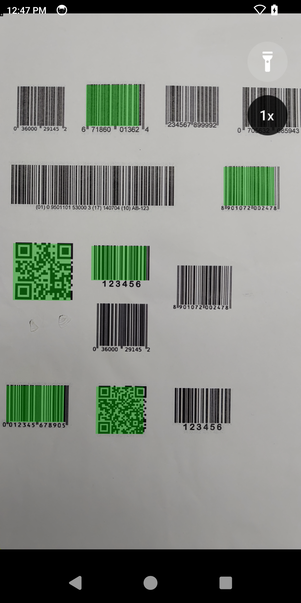
基本マルチバーコード機能を使用して強調表示されたバーコード
構成
基本マルチバーコード パラメータ:
- 入力ソース - データをキャプチャする次の入力ソースを指定します。イメージャまたはカメラ。
- ビーム タイマー/セッション タイムアウト - スキャン セッションのタイムアウト時間をミリ秒単位で指定します。整数範囲: 0 ～ 60000 (500 刻み)、デフォルト: 15000.
- 照明 - スキャン セッション中に照明のオン/オフを切り替えます。
- ズーム – (カメラのみ) カメラのズーム値を指定します。範囲: 1 ～ 8、デフォルト: 1.
- マルチバーコードの数量モードでは、スキャン セッションを完了するためのバーコードの数量を選択することができます。
- 固定数量 - セッションごとに一定の正確な数のバーコードをスキャンする場合に使用します。セッションは、目標数量が満たされた場合にのみ完了します。バーコードが少なすぎる場合、セッションはデータなしでタイムアウトします。ターゲットよりも多くのバーコードが読み取り範囲内にある場合、スキャナはカウントが満たされるまで最初に検出した重複しないバーコードを読み取ります (戻り順序はランダムです)。
- [固定バーコード数] - スキャンするバーコードの正確な数を指定します。最大: 100.
- 可変数量 - 指定された範囲内の可変数のバーコードをスキャンします。データは、一意のバーコードの最終カウントが最小値/最大値の範囲内の場合にのみ返されます。カウントが最小値を下回っている場合、データは返されません。エッジ ケース: 最大数が最小数より小さく設定されている場合、最大数を目標値として使用して、固定数量モードと同様に動作します。
- バーコードの最小数 - スキャンを完了するために必要な重複しないバーコードの最小数です。最小値: 1.
- 最大バーコード数 - スキャンを完了するために必要な重複しないバーコードの最大数です。最大値: 100.
- 固定数量 - セッションごとに一定の正確な数のバーコードをスキャンする場合に使用します。セッションは、目標数量が満たされた場合にのみ完了します。バーコードが少なすぎる場合、セッションはデータなしでタイムアウトします。ターゲットよりも多くのバーコードが読み取り範囲内にある場合、スキャナはカウントが満たされるまで最初に検出した重複しないバーコードを読み取ります (戻り順序はランダムです)。
- ビューファインダ – プレビューを有効にするか無効にするかを指定します。このパラメータは、入力ソースが「Imager」に設定されている場合にのみ表示されます。カメラの場合、プレビューは常に表示されます。
- フィードバック パラメータ:
- デコード完了の音声フィードバック - デコードに成功したことを示すために再生する音を選択します
- タッチ フィードバックのデコード - デコードに成功したときのデバイスのバイブレーションを有効/無効にします。
注: Android 13 デバイスでは、デバイスの [Settings] (設定) の [Vibration & haptics] (バイブレーションと触覚) で [Touch Feedback] (タッチ フィードバック) を有効にしないと、[Decode Haptic Feedback] (タッチ フィードバックのデコード) が機能しません。 - デコード時の LED 通知 - 有効にすると、緑色の LED が点滅し、デコードに成功したことを示します
- ビープ音量チャンネル - [デコード完了の音声フィードバック] の再生時に使用する音量設定を選択します。
- ベル音 - 音声フィードバックに [ベル音] 音量設定を使用します
- 音楽 & メディア - 音声フィードバックに音楽とメディアの音量設定を使用します
- アラーム - 音声フィードバックにアラームの音量設定を使用します
- 通知 - 音声フィードバックに通知の音量設定を使用します (デフォルト)
基本的なマルチバーコードを設定するには:
- DataWedge プロファイルで、NG SimulScan Plus の [ワークフロー入力] と [基本マルチバーコード] を有効にします。
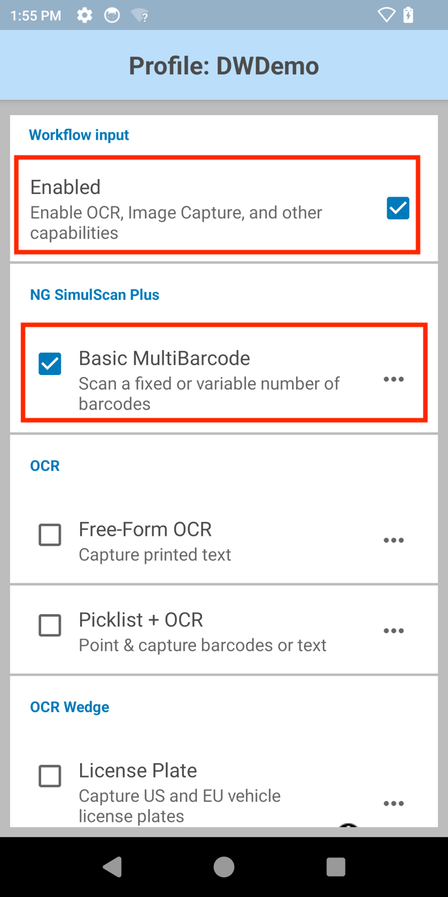
- [基本マルチバーコード] の横にあるメニュー アイコンをタップして、パラメータを設定します。
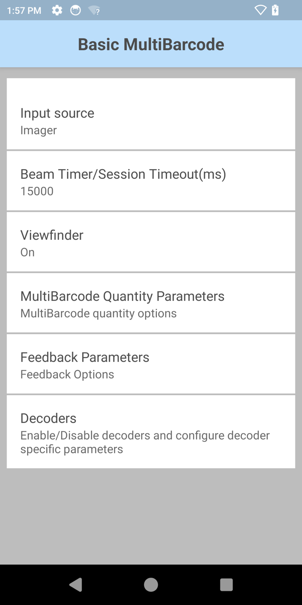
- [マルチバーコード数量パラメータ] を選択して設定します。
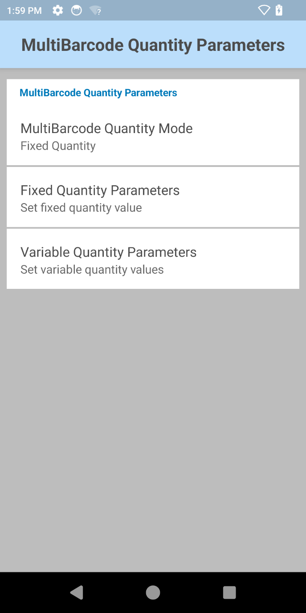
- [マルチバーコード数量モード] をタップし、[固定数量] または [可変数量]を選択します。
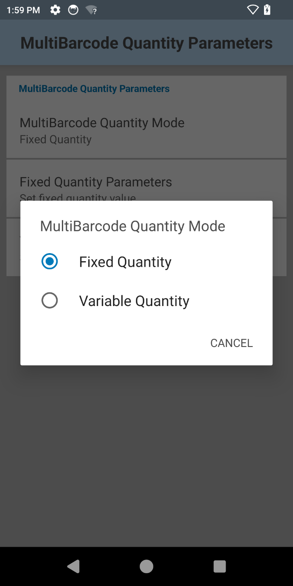
- 選択したモードに基づいてパラメータを設定します。
- [固定数量] の場合は、バーコードの固定数を設定します。
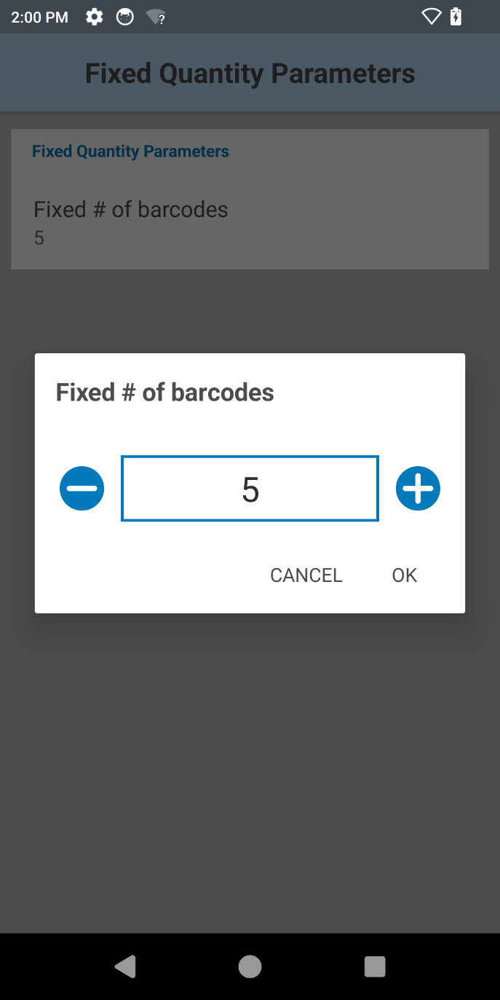
- [可変数量] の場合は、バーコードの最小数と最大数を設定します。
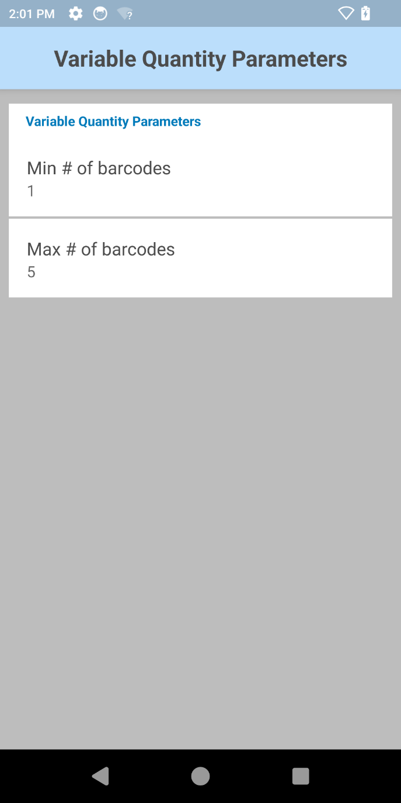
- [固定数量] の場合は、バーコードの固定数を設定します。
- [戻る] をタップして [基本マルチバーコード] 画面に戻り、その他の必要なオプションを設定します。
自由形式 OCR
自由形式 OCR を使用すると、ドキュメントやラベルをより速く処理し、より高い精度でデータをキャプチャできます。Text Recognition v2 (ベータ版) での Google ML Kit を利用した自由形式 OCR は、キャプチャされた画像内のテキストを認識し、デジタル形式でテキストを抽出することにより、データを自動的にキャプチャします。正規表現 (RegEx) を活用することで、ユーザはデコードされたテキストをフィルタリングして、必要な特定の情報のみを抽出することができます。自動キャプチャ モードとの組み合わせにより、自由形式 OCR は、対象データが定義された RegEx ルールに一致した時点でそのデータを自動的に取得し、ワークフローを大幅に高速化します。
カメラのキャプチャ時、対象領域 (ROI) のフレームがプレビュー画面に表示され、データのキャプチャ前にターゲット テキストを囲むようにフレームを調整できます。Zebra Professional シリーズ デバイスには、 Mobility DNA Enterprise ライセンスが必要です。
自由形式 OCR では、テキストを次の 3 つの部分に分割してキャプチャします。
- ブロック - 連続したテキスト行のセット (段落や列など)
- 行 - 同じ軸または行上の連続した単語のセット (テキスト行など)
- エレメント - ほとんどのラテン語では同じ軸上にある連続した英数字のセット (「単語」) 、またはその他の言語では 1 文字。
カメラからキャプチャした画像の解像度は 1920 x 1080 です。
詳しくは、『Workflow Input Programmer's Guide』の「インテントから文字列データを抽出する」をご覧ください。
自由形式 OCR を使ったデータ キャプチャのデモンストレーションビデオ
構成
自由形式 OCR パラメータ:
- 入力ソース - データをキャプチャする次の入力ソースを指定します。イメージャまたはカメラ。
- セッション タイムアウト - タイムアウト期間を指定します。整数範囲: 0 ～ 60000 (500 刻み)、デフォルト: 15000.
- スクリプト - 読み取り対象のテキストのスクリプト言語を指定します。中国語、日本語、韓国語、デーヴァナーガリー語、および複数のラテン語系言語がサポートされています。サポートされている言語については、「サポートされている言語」をご覧ください。
- ラテン文字 (デフォルト)
- ラテン文字と中国語
- ラテン文字と日本語
- ラテン文字と韓国語
- ラテン文字とデーヴァナーガリー文字
- 照明 - スキャン セッション中に照明のオン/オフを切り替えます。
- レポート OCR データ ルール - 選択されているテキストをデコードする条件とアクションを指定します。使用可能なオプション:
- 条件 - ルールを適用する条件を定義します。
- RegEx - 正規表現パターンを使用して、デコードされた OCR テキストから重要な情報をフィルタリングおよび抽出します。たとえば、出荷ラベルから PO 番号だけを抽出します。
- RegEx 検索 - 対象データをフィルタリングして抽出するために、Perl 互換正規表現 (PCRE) 形式で正規表現パターンを入力してください。自由形式 OCR では、RegEx は関心領域 (ROI) 内のテキスト ブロック全体にブロック レベルで適用されます。
複数行マッチングに関する注意事項: テキストに複数の行が含まれている場合は、RegEx の先頭に、(?m)フラグを追加します。これにより^(開始) および$(終了) アンカーの動作が変更され、テキストブロック全体の開始と終了だけでなく、テキスト ブロック内の各行の開始と終了にも一致するようになります。- 例: 「45」で始まる 10 桁の番号を検索するには、次の式を使用します。
\b45\d{8}\b
- 例: 「45」で始まる 10 桁の番号を検索するには、次の式を使用します。
- アクション - 条件が満たされたときに実行するアクションを定義します。
- レポート - 指定した条件に基づいてキャプチャしたテキストを返します。
- 条件 - ルールを適用する条件を定義します。
- 自動キャプチャ モード (RegEx) - 自動データ キャプチャを有効または無効にします (デフォルト)。
注: データ レポートを正常に実行するには、OCR データ ルールの設定が必須です。- 有効の場合: OCR データは、セッションの初期化後、定義された RegEx ルールに一致するテキストが識別されると自動的に取得されます。この画面はデフォルトでは全画面の関心領域 (ROI) に設定されていますが、開発者はこれを変更できます。
- 無効の場合: トリガの押下または画面上のコントロールによる手動確認が必要です。
- 出力イメージ - 出力イメージ モードを指定します。
- 無効 - イメージを出力しません
- フル - イメージ全体を出力
- トリミング (デフォルト) - ROI に合わせてトリミングされます。ROI は、データをキャプチャする際にユーザーがプレビュー画面で調整および設定します。
- ズーム – カメラのズーム値を指定します。1 ～ 8。デフォルト値は 1 です。
- フィードバック パラメータ:
- デコード完了の音声フィードバック - デコードに成功したことを示すために再生する音をリストから選択します
- タッチ フィードバックのデコード - デコードに成功したときのデバイスのバイブレーションを有効/無効にします。Android 13 デバイスでは、デバイスの [Settings] (設定) の [Vibration & haptics] (バイブレーションと触覚) で [Touch Feedback] (タッチ フィードバック) を有効にしないと、[Decode Haptic Feedback] (タッチ フィードバックのデコード) が機能しません。
- デコード時の LED 通知 - 有効にすると、緑色の LED が点滅し、デコードに成功したことを示します
- ビープ音量チャンネル - [デコード完了の音声フィードバック] の再生時に使用する音量設定を選択します。
- ベル音 - 音声フィードバックに [ベル音] 音量設定を使用します
- 音楽 & メディア - 音声フィードバックに音楽とメディアの音量設定を使用します
- アラーム - 音声フィードバックにアラームの音量設定を使用します
- 通知 - 音声フィードバックに通知の音量設定を使用します (デフォルト)
- 関心領域 (ROI) サイズ - 画面上のキャプチャ領域を定義します。
- 幅 - 画面に対する比率 - ROI 境界ボックスの幅を画面のパーセンテージで設定します。デフォルト: 40.
- 高さ - 画面に対する比率 - ROI 境界ボックスの高さを画面のパーセンテージで設定します。デフォルト: 10.
- サイズ変更の自動記憶 - 有効にすると、ROI はセッション全体で手動で設定したサイズを保持します。デフォルトでは、これは無効になっており、ROI は各セッションの開始時にデフォルトのサイズに戻ります。
自由形式 OCR パラメータを設定する方法:
- DataWedge プロファイルで、[OCR] の [ワークフロー入力] および [自由形式 OCR] を有効にします。
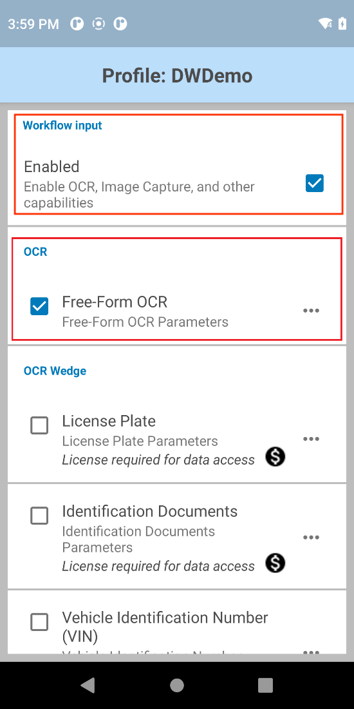
- [自由形式 OCR] の横にあるメニューアイコンをタップして、そのパラメータを開きます。
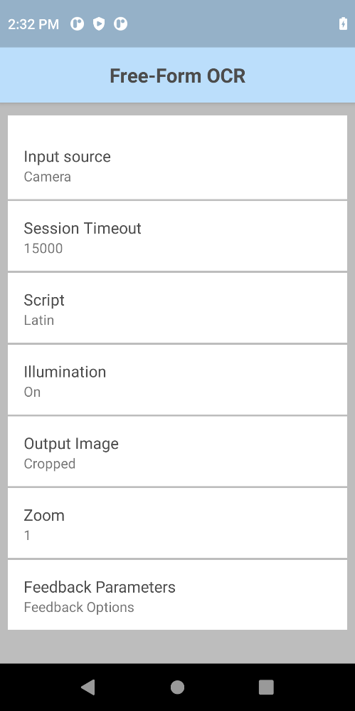
- 必要に応じて、自由形式 OCR のパラメータを選択し設定します。
- [フィードバック パラメータ] をタップします。

- 希望のフィードバック パラメータを設定します。
- オプションで、DWDemo を使用してこの機能を試すことができます。
ピックリスト + OCR
ピックリスト + OCR では、バーコードの読み取りと画像からの印刷テキストのデジタル化が可能で、単一のワークフロー内でシームレスに処理でき、機能を切り替える必要がありません。データは、カメラまたはイメージャのいずれかを使用してキャプチャされます。ピックリスト + OCR は、単語またはテキスト行の認識に対応しており、必要に応じて制約や信頼度レベルに関する OCR ルールをカスタマイズできます。OCR データ ルール (識別子または RegEx) を活用することで、ユーザーはデコードされたテキストをフィルタリングして、必要な特定の情報のみを抽出できます。自動キャプチャ モードとの組み合わせにより、ピックリスト + OCR は照準器を定義された RegEx ルールに一致するテキストに向けた時点で、対象データを自動的かつ即座にキャプチャし、ワークフローを大幅に高速化します。
キーストローク出力を使用して ピックリスト + OCR からスキャンした データを出力する場合は、スキャンしたデータを送信する前に、高度なデータ形式ルールを使用して「休止を送る」(約 200ms) ことを Zebra は推奨しています。
ピックリスト + OCR を使ったデータ キャプチャのデモンストレーションビデオ
構成
ピックリスト + OCR パラメータ:
- 入力ソース - データをキャプチャする次の入力ソースを指定します。イメージャまたはカメラ。デフォルト: イメージャ
- セッション タイムアウト - タイムアウト期間を指定します。整数範囲: 0 ～ 60000 (500 刻み)、デフォルト: 15000.
- 照明 - スキャン セッション中に照明のオン/オフを切り替えます。デフォルト値は、イメージャでは「オン」、カメラでは「オフ」です。
- スクリプト - スクリプトを指定します:
- ラテン文字 (デフォルト)
- ラテン文字と中国語
- ラテン文字と日本語
- ラテン文字と韓国語
- ラテン文字とデーヴァナーガリー文字
- レポート OCR データ ルール - 選択されているテキストをデコードする条件とアクションを指定します。使用可能なオプション:
- 条件 - ルールを適用する条件を定義します。
- 識別子:
- 最小長 - 返されるテキストの最小長を指定します。
- 最大長 - 返されるテキストの最大長を指定します。
- 先頭文字列 - テキストは指定された文字で始まる必要があります。
- [含む] - テキストには指定した文字を含める必要があります。
- 大文字と小文字を区別しない - 有効にすると、キャプチャされたテキストは大文字と小文字を区別せず、「含む」フィールドの文字列と大文字と小文字を一致させる必要はありません。無効にすると、キャプチャされたテキストで大文字と小文字が区別され、大文字と小文字が [含む] フィールドの文字列と一致する必要があります。
- RegEx - 正規表現パターンを使用して、デコードされた OCR テキストから重要な情報をフィルタリングおよび抽出します。たとえば、出荷ラベルから PO 番号だけを抽出します。
- RegEx 検索 - 対象データをフィルタリングして抽出するために、Perl 互換正規表現 (PCRE) 形式で正規表現パターンを入力してください。
注: RegEx は、選択した テキスト構造に基づいて、照準器 (十字線) の下にあるテキストにのみ適用されます。- 1 単語: 個々の単語に適用されます。例: 「45」で始まる 10 桁の番号を検索するには、次の式を使用します。
^45\d{8}$ - 1 行: テキスト行に適用されます。例: 「45」で始まる 10 桁の番号を検索するには、次の式を使用します。
\b45\d{8}\b
- 1 単語: 個々の単語に適用されます。例: 「45」で始まる 10 桁の番号を検索するには、次の式を使用します。
- RegEx 検索 - 対象データをフィルタリングして抽出するために、Perl 互換正規表現 (PCRE) 形式で正規表現パターンを入力してください。
- 識別子:
- アクション - 条件が満たされたときに実行するアクションを定義します。
- レポート - 指定した条件に基づいてキャプチャしたテキストを返します。
- 条件 - ルールを適用する条件を定義します。
- OCR 自動キャプチャ モード (データ ルール) - 自動データ キャプチャを有効または無効 (デフォルト) にします。
注: データ レポートを正常に実行するには、OCR データ ルール (RegEx) の設定が必須です。- 有効の場合: OCR データは、定義された OCR データ ルールに一致するテキストに照準器を向けると自動的に取得されます。バーコードのキャプチャは手動のままで、トリガを押す必要があります。
- 無効の場合: トリガを押して、手動で確認する必要があります。
- レポート バーコード データ ルール - バーコードを読み取る条件とアクションを指定します。使用可能なオプション:
- 条件 - ルールを適用する条件を定義します。
- 識別子:
- 最小長 - 返されるバーコードの最小長を指定します。
- 最大長 - 返されるバーコードの最大長を指定します。
- 先頭文字列 - バーコードの開始文字を指定します。
- 含む – バーコードには指定された文字が含まれている必要があります。
- 大文字と小文字を区別しない - 有効にすると、キャプチャされたバーコードでは大文字と小文字が区別されず、「含む」 フィールドの文字列と大文字と小文字を一致させる必要はありません。無効にすると、キャプチャされた単語で大文字と小文字が区別され、大文字と小文字が [含む] フィールドの文字と一致する必要があります。
- レポート – 指定した条件に基づいてキャプチャしたバーコードを返します。
- 識別子:
- 条件 - ルールを適用する条件を定義します。
- ピックリスト モード - ピックリスト モードでスキャンするデータ タイプを選択します:
- OCR またはバーコード (デフォルト)
- OCR のみ
- バーコードのみ
- テキスト構造 - テキストのデータ構造を選択します。
- 1 単語
- 1 行 (デフォルト)
- 出力イメージ (OCR のみ) - 出力イメージ モードを指定します。
- 無効 - 画像は出力されません。
- トリミング (デフォルト) - 単語が読み取られた場合にのみ、トリミングされた画像が返されます。バーコードが読み取られた場合、画像は返されません。
- OCR 信頼度 – OCR を使用してデコードされた単語を返すために必要な最小信頼度を指定します。整数範囲: 0 ～ 100 (デフォルト)75.
- ビューファインダ –プレビューを有効/無効にするかどうかを指定します。このパラメータは、入力ソースが「Imager」に設定されている場合にのみ表示されます。カメラの場合、プレビューは常に表示されます。
- フィードバック パラメータ:
- デコード完了の音声フィードバック - デコードに成功したことを示すために再生する音をリストから選択します。
- タッチ フィードバックのデコード - デコードに成功したときのデバイスのバイブレーションを有効/無効にします。
- デコード時の LED 通知 - 有効にすると、緑色の LED が点滅し、デコードに成功したことを示します。
- ビープ音量チャンネル - [デコード完了の音声フィードバック] の再生時に使用する音量設定を選択します。
- ベル音 - 音声フィードバックに [ベル音] 音量設定を使用します
- 音楽 & メディア - 音声フィードバックに音楽とメディアの音量設定を使用します
- アラーム - 音声フィードバックにアラームの音量設定を使用します
- 通知 - 音声フィードバックに通知の音量設定を使用します (デフォルト)
- デコーダ – デコーダを有効/無効にし、特定のデコーダ パラメータを設定します。
デフォルトのシンボル体系の状態は以下の通りです。
| シンボル体系 | 有効 | 無効 |
|---|---|---|
| Australian Postal | x | |
| AZTEC | x | |
| Canadian Postal | x | |
| Chinese 2 of 5 | x | |
| Codabar | x | |
| Code 11 | x | |
| Code 128 | x | |
| Code 39 | x | |
| Code 93 | x | |
| Composite AB | x | |
| Composite C | x | |
| Discrete 2 of 5 | x | |
| Data Matrix | x | |
| DotCode | x | |
| Dutch Postal | x | |
| EAN 128 | x | |
| EAN 13 | x |
| シンボル体系 | 有効 | 無効 |
|---|---|---|
| EAN 8 | x | |
| Finnish Postal 4S | x | |
| Grid Matrix | x | |
| GS1 Databar | x | |
| GS1 Databar Expanded | x | |
| GS1 Databar Limited | x | |
| GS1 Datamatrix | x | |
| GS1 QRCode | x | |
| Han Xin | x | |
| Interleaved 2OF5 | x | |
| ISBT 128 | x | |
| Japanese Postal | x | |
| Korean 3OF5 | x | |
| Mailmark | x | |
| Matrix 2OF5 | x | |
| Maxicode | x |
| シンボル体系 | 有効 | 無効 |
|---|---|---|
| Micro QR | x | |
| MicroPDF | x | |
| MSI | x | |
| PDF 417 | x | |
| QR Code | x | |
| 署名 | x | |
| TLC 39 | x | |
| Trioptic 39 | x | |
| UK Postal | x | |
| UPCA | x | |
| UPCE0 | x | |
| UPCE1 | x | |
| US Planet | x | |
| US Postnet | x | |
| US4State | x | |
| US4state FICS | x |
レポート OCR データ ルールを作成するには:
- [ワークフロー入力] および [ピックリスト + OCR] を有効にします。
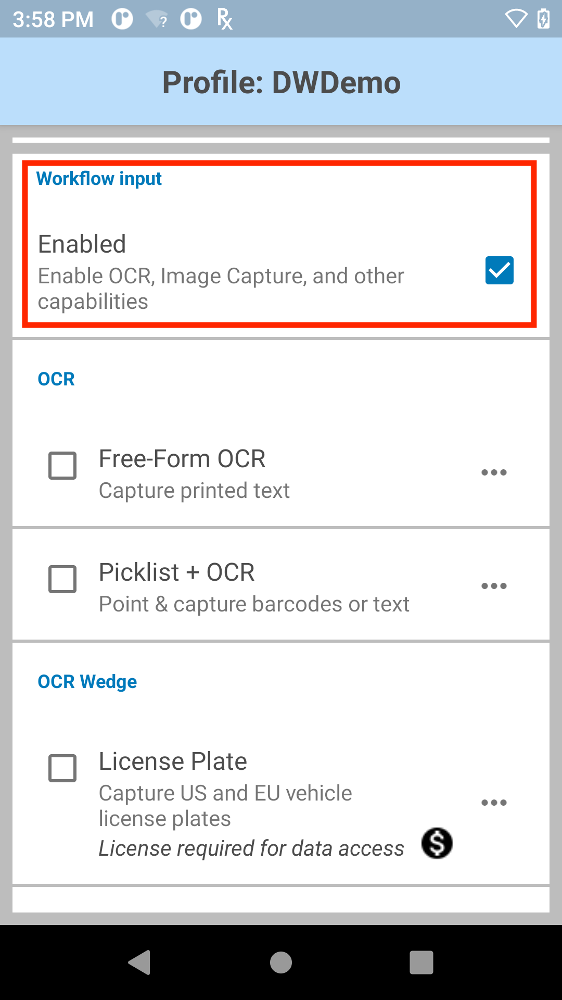
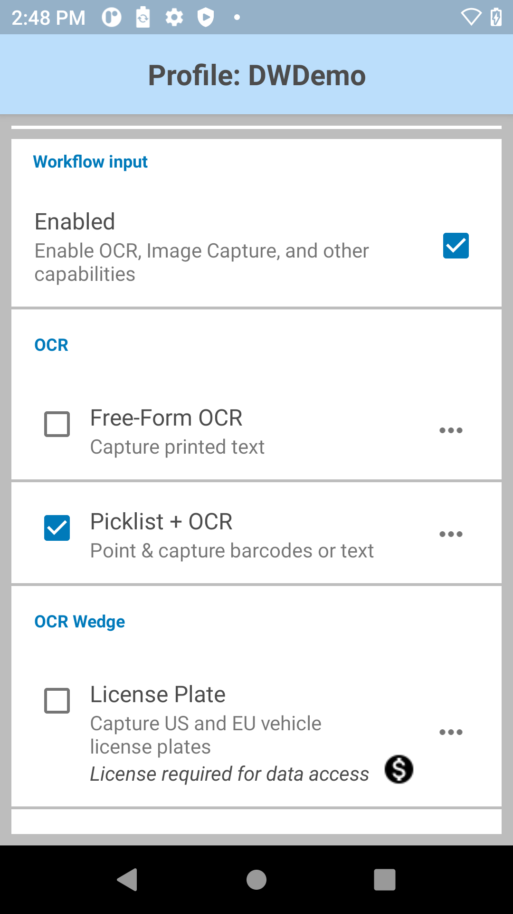
- [ピックリスト + OCR]の横の省略記号 (...) を タップし、[レポート OCR データ ルール] をタップします。
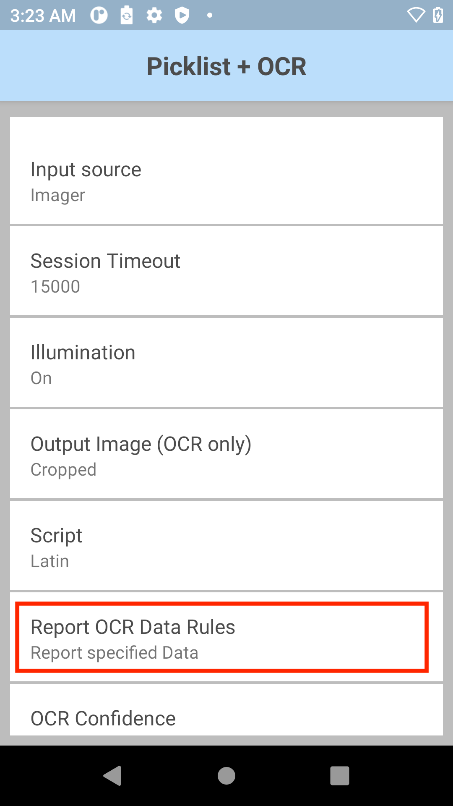
- 右上にあるメニュー アイコンをタップし、[新規ルール] をタップします。
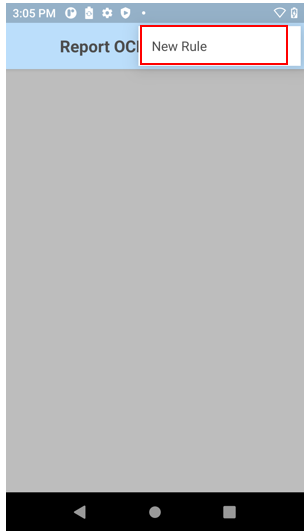
- 新しいルールの名前を入力し、[OK] をタップして新しいルールを作成します。
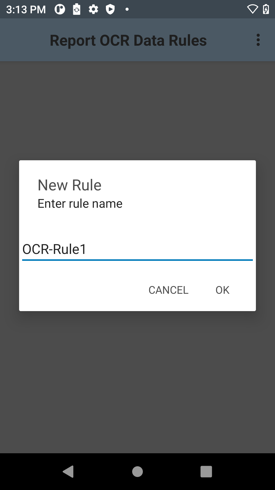
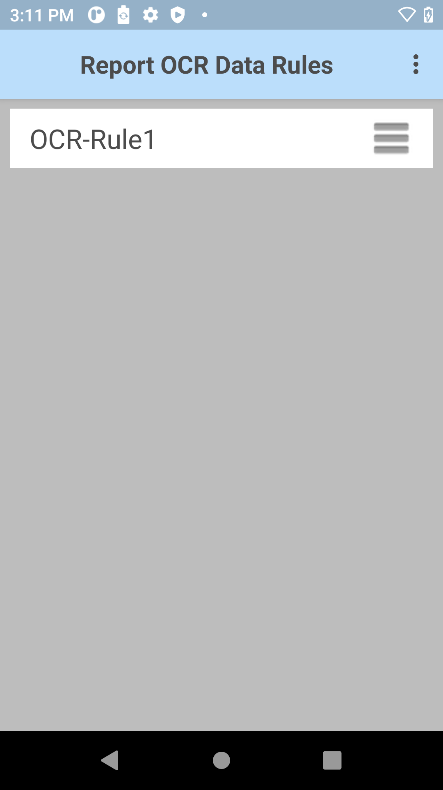
- 作成した新しいルールをタップして、そのオプションを開きます。
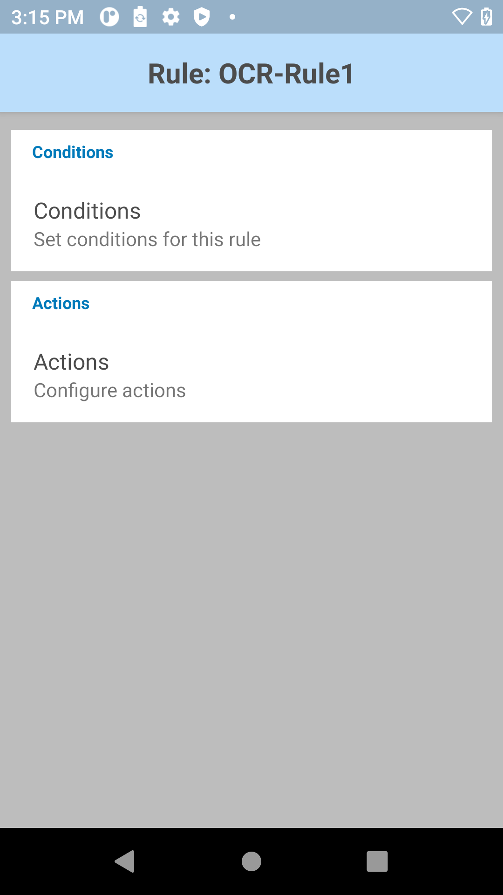
- [条件] をタップして、ルールを有効にする条件を指定し、[識別子] をタップします。
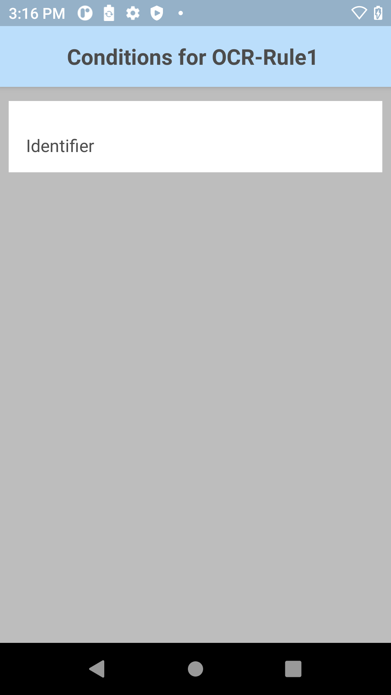
- 必要に応じて適切な設定を行います。
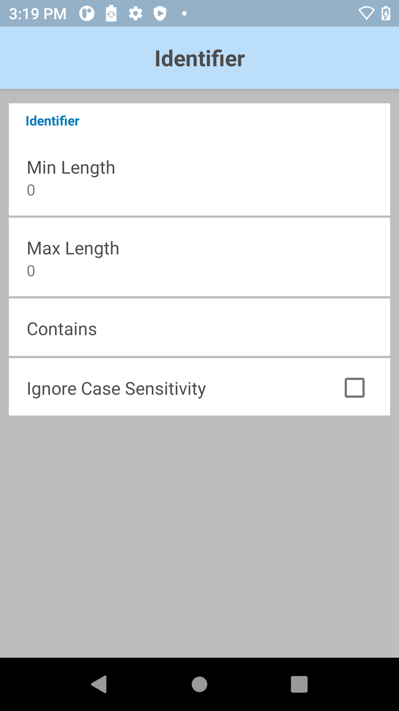
- 画面にルールが表示されるまで戻るをタップします。
- ルールをタップしてオプションを開き、[アクション] をタップします。
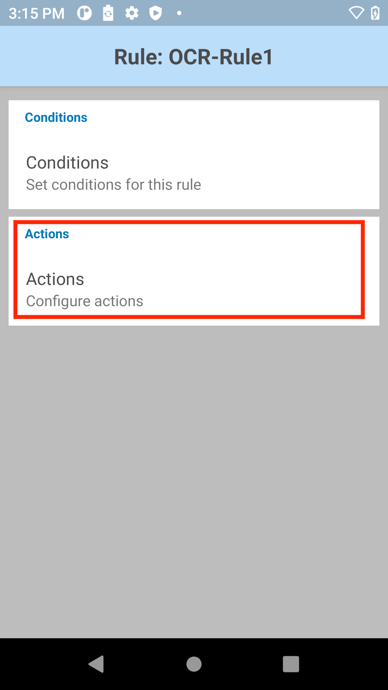
- 右上にあるメニュー アイコンをタップし、[新規アクション] をタップします。
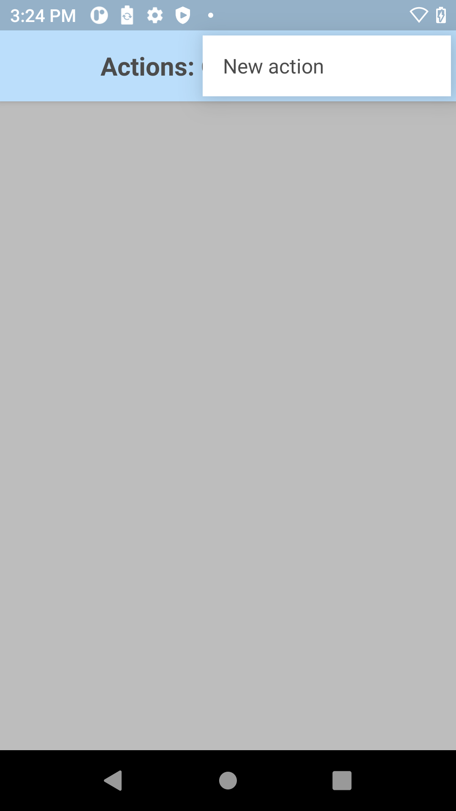
- [レポート] をタップして、指定した条件に基づいてバーコードを読み取ります。
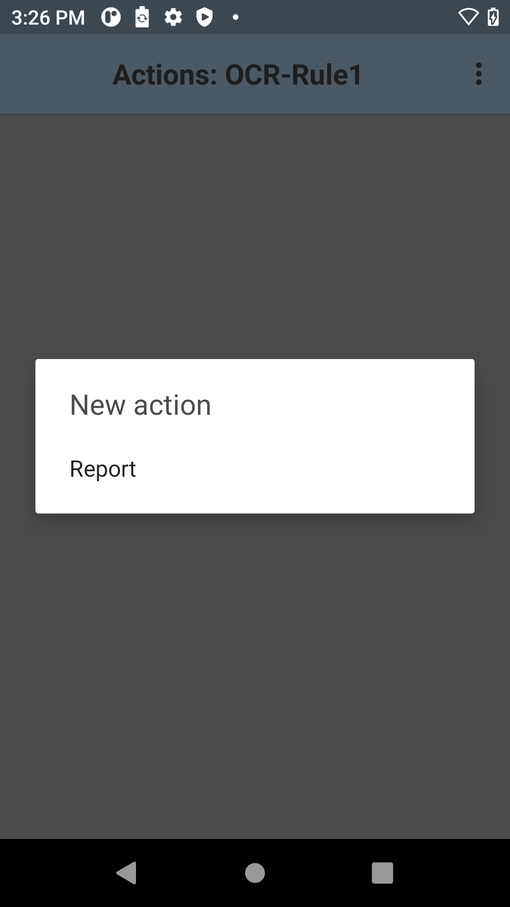
- レポート アクションがリストされます。
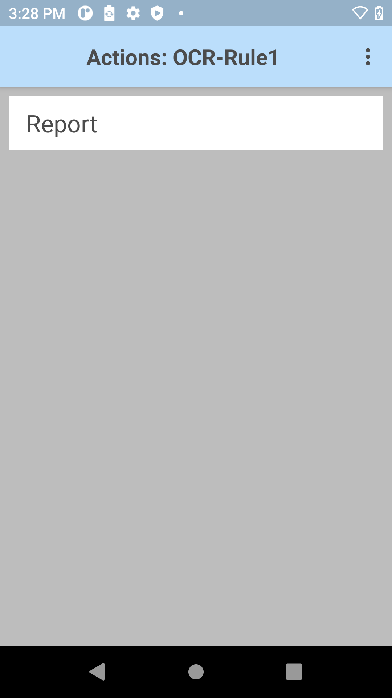
他のピックリスト + OCR パラメータを設定するには:
- DataWedge プロファイルで、[OCR] の [ワークフロー入力] および [ピックリスト + OCR] を有効にします。
- [ピックリスト + OCR] の横にある省略記号 (...) をタップして、そのパラメータを開きます。必要に応じてパラメータを設定します。
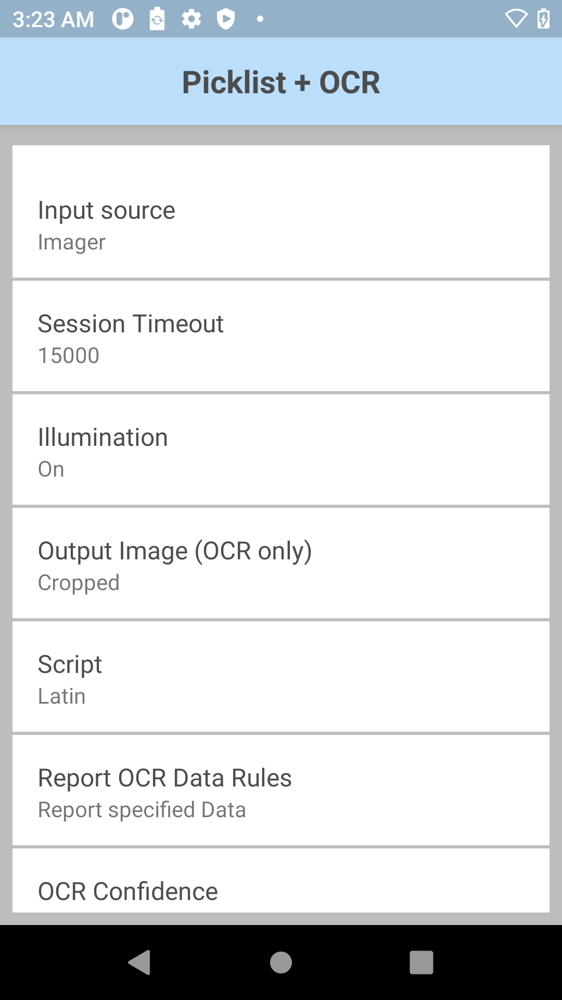
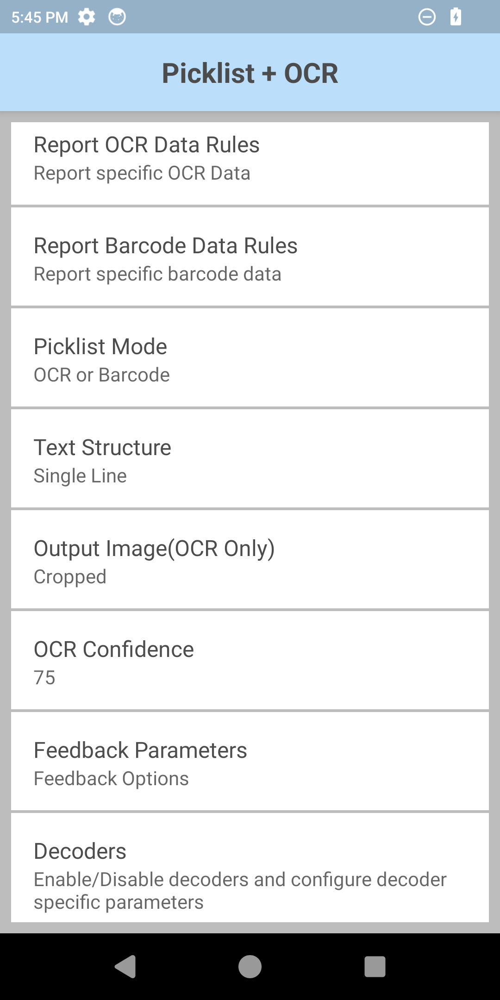
- [フィードバック パラメータ] をタップします。必要に応じてパラメータを設定します。
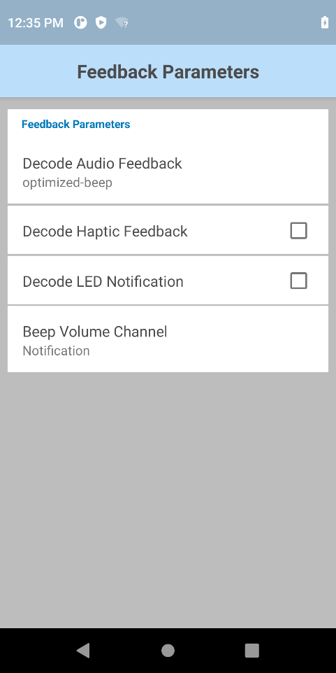
OCR Wedge
OCR Wedge は、機械学習を使用して、微調整されたユースケース固有のモデルを有効にし、データ接続を必要とせずに Zebra Android デバイスのカメラを介してリアルタイムでデータを抽出します。サポートされている構成:
| ナンバープレート (サポートされている国/州を参照) | ||
| 身分証明書 (州、国、都道府県別にサポートされているドキュメント タイプを参照してください)。 | ||
| 車両識別番号 (VIN) | ||
| タイヤ識別番号 (TIN) | ||
| 輸送コンテナ ID | ||
| 検針 |
主な機能:
- トレーニングを受けた機械学習モデルを使用した自動テキスト データ収集
- データ収集中にユーザーをガイドするために提供される視覚的フィードバック
- キャプチャされているデータのデバイス上での処理
各構成の詳細については、以下のセクションを参照してください。詳細については、「OCR Wedge」を参照してください。
ナンバープレート
ナンバープレート OCR Wedge は、以下の特性を持つナンバープレートの自動認識を提供します。
- 対象国/地域: 米国、EU。サポート対象の州/国のリストを参照してください。
- サポートされている文字の色: 黒、緑、青、赤
- 1 行または 2 行のナンバープレート
- 幅と高さの比率が 1:1 以上のナンバープレート
- 明るい背景に暗色のテキスト
| 米国 (ニューヨーク) および英国のナンバープレートの例 |
ナンバープレート スキャンのデモ ビデオ
パフォーマンスと動作に関する考慮事項:
- パフォーマンスは、反射、日光、異物 (汚れ、雪など)、傷などの要因に影響される可能性があります。
- ダッシュ (-) とコロン (: ) 文字はサポートされていません。
サポートされているナンバー プレート
サポートされているナンバー プレートの一覧。画像をクリックすると、サポートされているナンバー プレートの全リストが表示されます。 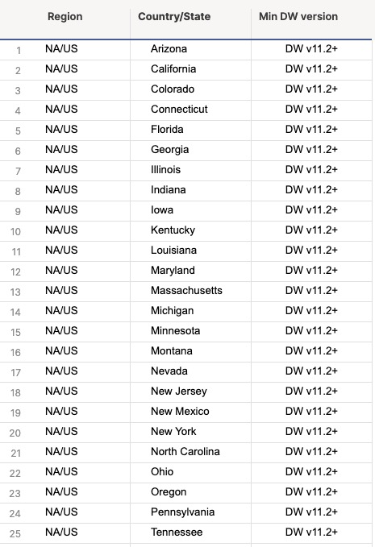
構成
ナンバープレート パラメータ:
- 入力ソース - データをキャプチャする入力ソースを指定します。OCR サポートのためデフォルトではカメラに設定されます。
- セッション タイムアウト - タイムアウト期間を指定します。整数範囲: 0 ～ 60000 (500 刻み)、デフォルト: 10000.
- 照明 - スキャン中に照明のオン/オフを切り替えます。
- 出力イメージ - データのデコード元となるイメージを出力します。
- フル - イメージ全体を出力 (デフォルト)
- なし - イメージを出力しません
- 領域選択 - ナンバープレートの領域に基づいてスキャン モードを選択します。「サポートされるナンバープレート」を参照してください。
- EU - 欧州のナンバープレート
- 米国 - 米国のナンバープレート
- フィードバック パラメータ:
- 音声フィードバックのデコード - デコードに成功したことを示すために再生する音をリストから選択します
- タッチ フィードバックのデコード - デコードに成功したときのデバイスのバイブレーションを有効/無効にします。Android 13 デバイスでは、デバイスの [Settings] (設定) の [Vibration & haptics] (バイブレーションと触覚) で [Touch Feedback] (タッチ フィードバック) を有効にしないと、[Decode Haptic Feedback] (タッチ フィードバックのデコード) が機能しません。
- デコード時の LED 通知 - 有効にすると、緑色の LED が点滅し、デコードに成功したことを示します
- ビープ音量チャンネル - [デコード完了の音声フィードバック] の再生時に使用する音量設定を選択します。
- ベル音 - 音声フィードバックに [ベル音] 音量設定を使用します
- 音楽 & メディア - 音声フィードバックに音楽とメディアの音量設定を使用します
- アラーム - 音声フィードバックにアラームの音量設定を使用します
- 通知 - 音声フィードバックに通知の音量設定を使用します (デフォルト)
ナンバープレート パラメータを設定するには:
- DataWedge プロファイルで、OCR Wedge の [ワークフロー入力] と [ナンバー プレート] を有効にします。注: カスタム DataWedge プロファイル (DWDemo 以外のプロファイル) からアクセスするには、ナンバー プレート OCR Wedge ライセンスが必要です。
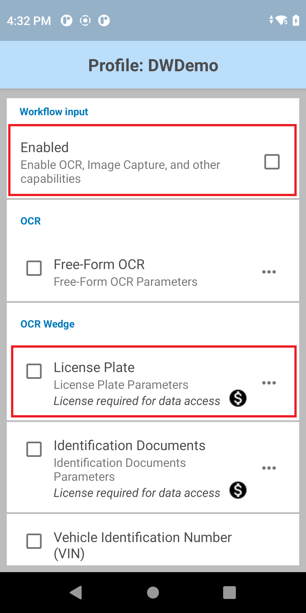
- [ナンバープレート] の横にあるメニュー アイコンをタップして、[ナンバープレート] パラメータを開きます。
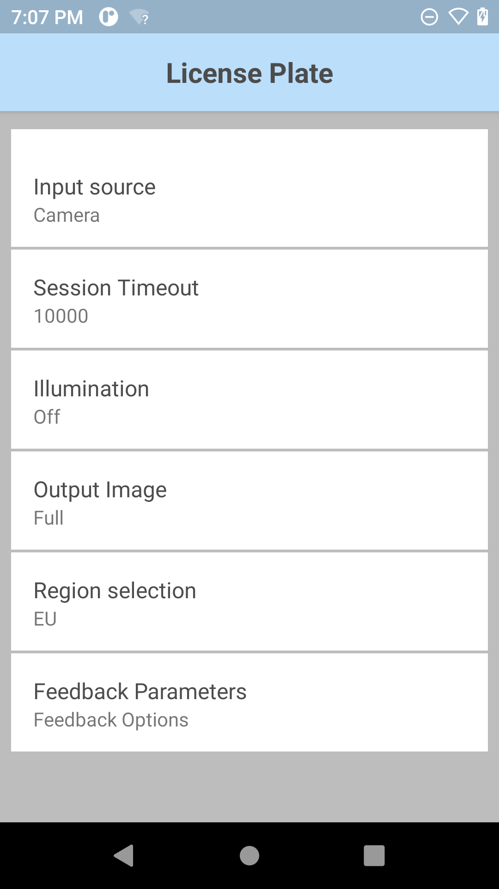
- 必要に応じて、ナンバープレート パラメータを選択して設定します。
- [地域の選択] をタップして、適切な地域を選択します。
- [戻る] を 2 回タップして、[ナンバープレート] パラメータ画面に戻ります。
- [フィードバック パラメータ] をタップします。
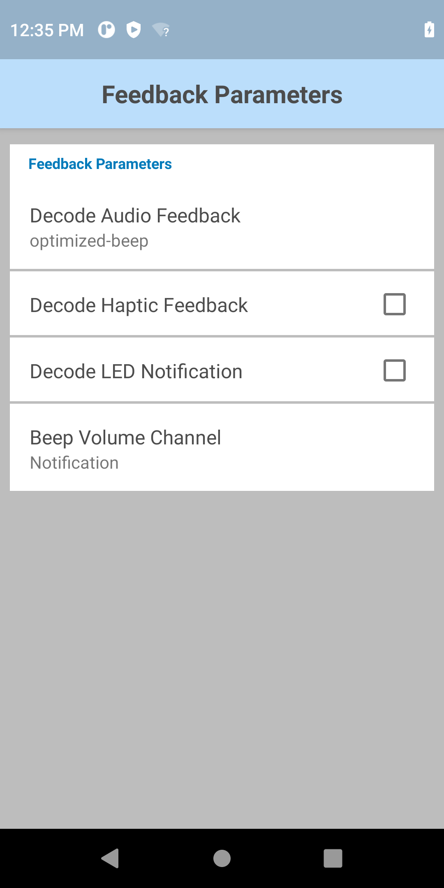
- 希望のフィードバック パラメータを設定します。
- オプションで、DWDemo を使用してこの機能を試すことができます。
身分証明書
身分証明書 OCR Wedge では、地域に応じて、異なる ID カード (国別 ID や常駐カードなど) と運転免許証を自動的に認識できます。
- 運転免許証: ヨーロッパ、米国、カナダ、オーストラリア、ニュージーランド
- 国民/居住者 ID カード: 欧州、米国、メキシコ
「サポートされている身分証明書」を参照してください。
身分証明書から取得できる個々のフィールドのリストを参照してください。
| 米国 (ペンシルバニア州) およびノルウェーの運転免許証の例 |
身分証明書のスキャンのデモ ビデオ
パフォーマンスと動作に関する考慮事項:
- パフォーマンスは、反射、照明条件、異物 (汚れ、雪など)、摩耗、背景のコントラスト不良などの要因に影響される可能性があります。
- 一部の特殊文字 (例: ñ、á) はサポートされていません。
サポートされている身分証明書
サポートされる身分証明書の一部リスト。画像をクリックすると、サポートされている身分証明書の全リストが表示されます。 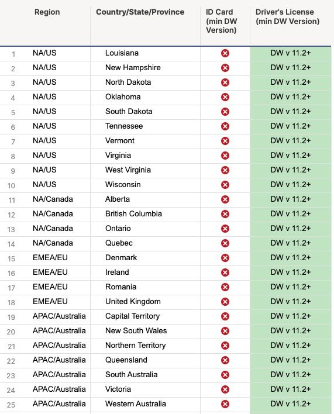
構成
身分証明書パラメータ:
- 入力ソース - データをキャプチャする入力ソースを指定します。OCR サポートのためデフォルトではカメラに設定されます。
- セッション タイムアウト - タイムアウト期間を指定します。整数範囲: 0 ～ 60000 (500 刻み)、デフォルト: 10000.
- 照明 - スキャン中に照明のオン/オフを切り替えます。
- 出力イメージ - データのデコード元となるイメージを出力します。
- フル - イメージ全体を出力 (デフォルト)
- なし - イメージを出力しません
- フィードバック パラメータ:
- 音声フィードバックのデコード - デコードに成功したことを示すために再生する音をリストから選択します
- タッチ フィードバックのデコード - デコードに成功したときのデバイスのバイブレーションを有効/無効にします。Android 13 デバイスでは、デバイスの [Settings] (設定) の [Vibration & haptics] (バイブレーションと触覚) で [Touch Feedback] (タッチ フィードバック) を有効にしないと、[Decode Haptic Feedback] (タッチ フィードバックのデコード) が機能しません。
- デコード時の LED 通知 - 有効にすると、緑色の LED が点滅し、デコードに成功したことを示します
- ビープ音量チャンネル - [デコード完了の音声フィードバック] の再生時に使用する音量設定を選択します。
- ベル音 - 音声フィードバックに [ベル音] 音量設定を使用します
- 音楽 & メディア - 音声フィードバックに音楽とメディアの音量設定を使用します
- アラーム - 音声フィードバックにアラームの音量設定を使用します
- 通知 - 音声フィードバックに通知の音量設定を使用します (デフォルト)
身分証明書パラメータを設定するには:
- DataWedge プロファイルで、[OCR Wedge] の下の [ワークフロー入力] と [身分証明書] を有効にします。注: 身分証明書 OCR Wedge ライセンスが必要です。
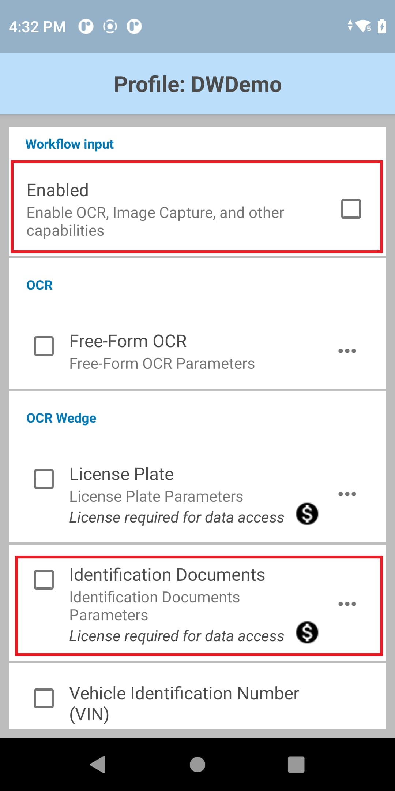
- [身分証明書] の横にあるメニュー アイコンをタップして、[身分証明書] パラメータを開きます。
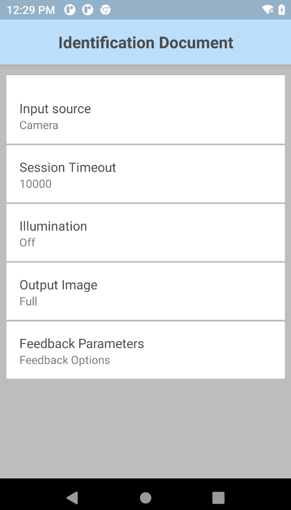
- 必要に応じて、身分証明書パラメータを選択して設定します。
- [フィードバック パラメータ] をタップします。
- 希望のフィードバック パラメータを設定します。
- オプションで、DWDemo を使用してこの機能を試すことができます。
車両識別番号 (VIN)
車両識別番号 (VIN) OCR Wedge は、自動車のフロントガラスや紙の文書から ISO 3779 に準拠した VIN を自動的に認識する機能を提供します。その特性は次の通りです。
- 17 文字の英数字 (アルファベットはすべて大文字) で構成されています。ただし、一部の文字は除外されます。I、O、Q
- 水平または垂直形式
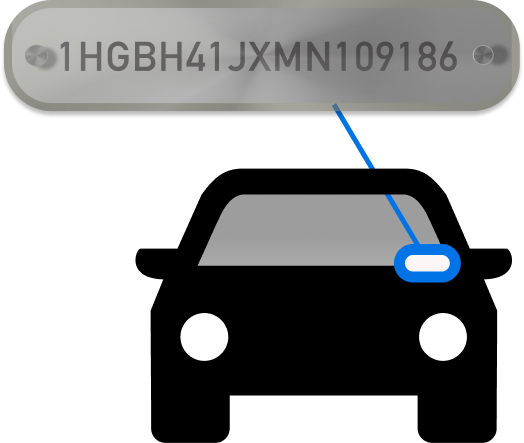 |
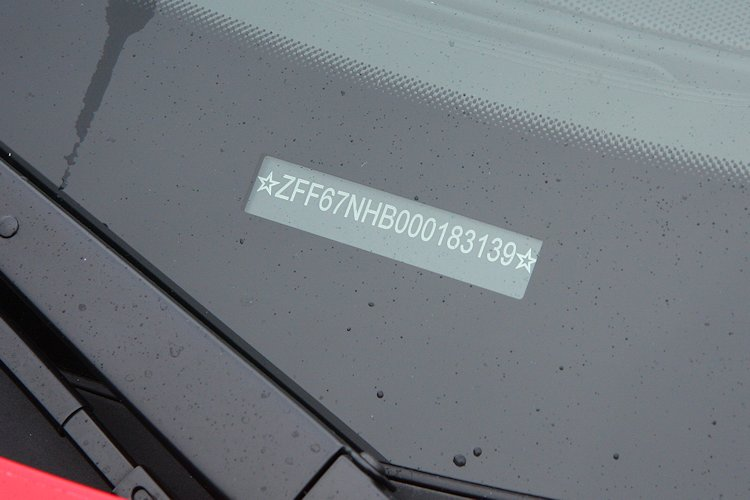 |
|
| VIN のサンプル |
VIN スキャンのデモ ビデオ
パフォーマンスと動作に関する考慮事項:
- エンボス加工された低コントラストの VIN を読み取ることはできません。
- パフォーマンスは、反射、照明条件、異物 (汚れ、雪など)、摩耗などの要因に影響される可能性があります。
構成
車両識別番号パラメータ:
- 入力ソース - データをキャプチャする入力ソースを指定します。OCR サポートのためデフォルトではカメラに設定されます。
- セッション タイムアウト - タイムアウト期間を指定します。整数範囲: 0 ～ 60000 (500 刻み)、デフォルト: 10000.
- 照明 - スキャン中に照明のオン/オフを切り替えます。
- 出力イメージ - データのデコード元となるイメージを出力します。
- フル - イメージ全体を出力 (デフォルト)
- なし - イメージを出力しません
- フィードバック パラメータ:
- 音声フィードバックのデコード - デコードに成功したことを示すために再生する音をリストから選択します
- タッチ フィードバックのデコード - デコードに成功したときのデバイスのバイブレーションを有効/無効にします。Android 13 デバイスでは、デバイスの [Settings] (設定) の [Vibration & haptics] (バイブレーションと触覚) で [Touch Feedback] (タッチ フィードバック) を有効にしないと、[Decode Haptic Feedback] (タッチ フィードバックのデコード) が機能しません。
- デコード時の LED 通知 - 有効にすると、緑色の LED が点滅し、デコードに成功したことを示します
- ビープ音量チャンネル - [デコード完了の音声フィードバック] の再生時に使用する音量設定を選択します。
- ベル音 - 音声フィードバックに [ベル音] 音量設定を使用します
- 音楽 & メディア - 音声フィードバックに音楽とメディアの音量設定を使用します
- アラーム - 音声フィードバックにアラームの音量設定を使用します
- 通知 - 音声フィードバックに通知の音量設定を使用します (デフォルト)
車両識別番号パラメータを設定するには:
- DataWedge プロファイルの OCR で [ワークフロー入力] と [車両識別番号 (VIN)] を有効にします。注: 車両識別番号 OCR Wedge ライセンスが必要です。
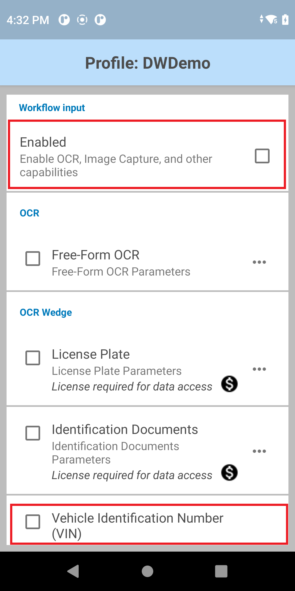
- 車両識別番号 (VIN) の横にあるメニュー アイコンをタップ して、パラメータを開きます。
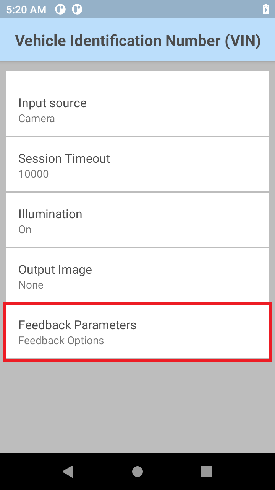
- 必要に応じて、VIN パラメータを選択して設定します。
- [フィードバック パラメータ] をタップします。
- 希望のフィードバック パラメータを設定します。
タイヤ識別番号 (TIN)
タイヤ識別番号 (TIN) OCR ウェッジは、タイヤ リムのサイドウォールの内側にある TIN を認識します。サポートされる TIN の種類には、米国運輸省 (DOT) 、商業およびタイヤサイズが含まれます。
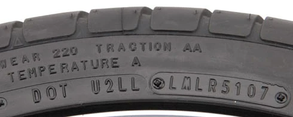 |
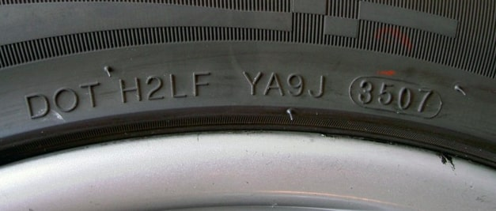 |
|
| DOT TIN サンプル |
TIN OCR モードの要件:
| US DOT 1 | US DOT 2 | ユニバーサル * | 商用 | タイヤ サイズ | |
|---|---|---|---|---|---|
| 文字サポート | A、B、C、D、E、F、H、J、K、L、M、N、P、R、T、U、V、W、X、Y 0 ～ 9 |
A、B、C、D、E、F、H、J、K、L、M、N、P、R、T、U、V、W、X、Y 0 ～ 9 |
[A-Z0-9] | [A-Z0-9] 英字「O」を除く | [A-Z0-9/+ ] |
| 正規表現 (文字列は次の形式に従う必要があります) | N/A | N/A | N/A | [0-9A-NP-Z]{3}[0-9]{4,10}[0-9A-NP-Z]{0,1} | [A-Z0-9+ ]{0,10}[0-9]{2,3}/[0-9]{2,3} ?[A-Z][A-Z0-9+/ ]{0,15} |
| 開始文字 | 「DOT」で始まる必要があります | 「DOT」で始まる必要があります | N/A | N/A | N/A |
| 文字列の長さ | 15 ～ 16 文字 | 11 ～ 16 文字 | 最低 4 文字 | 7 ～ 14 文字 | 10 ～ 20 文字 |
| その他の要件 | 2000 年以降に製造されたタイヤのみをサポートします。 | 2000 年以降に製造されたタイヤのみをサポートします。 | N/A | N/A | N/A |
* ユニバーサル TIN は、商用とタイヤ サイズを除いて、米国 DOT 1、米国 DOT 2、および非 DOT タイヤ識別番号も読み取ることができます。
TIN スキャンのデモ ビデオ
構成
タイヤ識別番号パラメータ:
- 入力ソース - データをキャプチャする入力ソースを指定します。OCR サポートのためデフォルトではカメラに設定されます。
- セッション タイムアウト - タイムアウト期間を指定します。整数範囲: 0 ～ 60000 (500 刻み)、デフォルト: 10000.
- 照明 - スキャン中に照明のオン/オフを切り替えます。
- 出力イメージ - データのデコード元となるイメージを出力します。
- フル - イメージ全体を出力 (デフォルト)
- なし - イメージを出力しません
- TIN タイプ - TIN 読み取り用スキャン モード:
- フィードバック パラメータ:
- 音声フィードバックのデコード - デコードに成功したことを示すために再生する音をリストから選択します
- タッチ フィードバックのデコード - デコードに成功したときのデバイスのバイブレーションを有効/無効にします。Android 13 デバイスでは、デバイスの [Settings] (設定) の [Vibration & haptics] (バイブレーションと触覚) で [Touch Feedback] (タッチ フィードバック) を有効にしないと、[Decode Haptic Feedback] (タッチ フィードバックのデコード) が機能しません。
- デコード時の LED 通知 - 有効にすると、緑色の LED が点滅し、デコードに成功したことを示します
- ビープ音量チャンネル - [デコード完了の音声フィードバック] の再生時に使用する音量設定を選択します。
- ベル音 - 音声フィードバックに [ベル音] 音量設定を使用します
- 音楽 & メディア - 音声フィードバックに音楽とメディアの音量設定を使用します
- アラーム - 音声フィードバックにアラームの音量設定を使用します
- 通知 - 音声フィードバックに通知の音量設定を使用します (デフォルト)
タイヤ識別番号 (TIN) パラメータを設定する方法。
- DataWedge プロファイルで、[OCR Wedge] の [ワークフロー入力] と [タイヤ識別番号 (TIN)] を有効にします。注: タイヤ識別番号 OCR Wedge ライセンスが必要です。
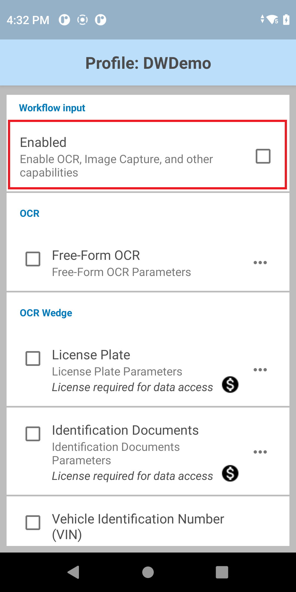
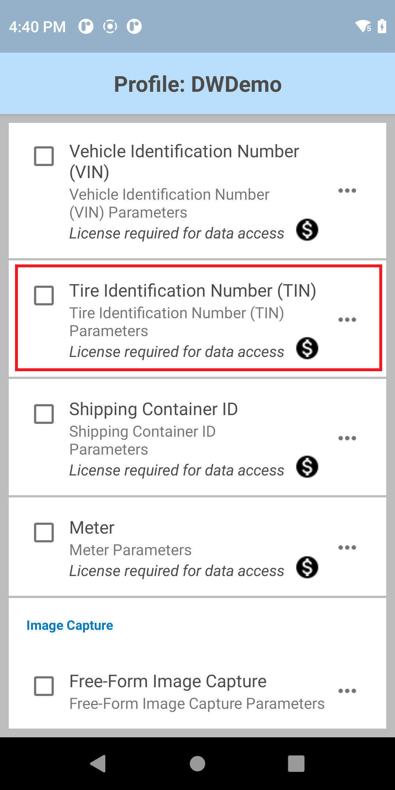
- タイヤ識別番号 (TIN) の横にあるメニュー アイコンをタップして、パラメータを開きます。
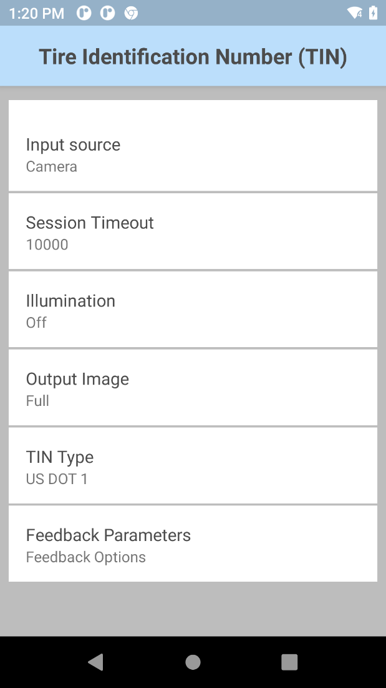
- 必要に応じて、TIN パラメータを選択して設定します。
- [フィードバック パラメータ] をタップします。
- 希望のフィードバック パラメータを設定します。
- オプションで、DWDemo を使用してこの機能を試すことができます。
輸送コンテナ ID
輸送コンテナ識別番号をキャプチャして、鉄道、海路、陸路を経由するサプライ チェーンを介して大量の貨物の処理と追跡を合理化します。内蔵イメージャは、至近距離からも離れた位置からも出荷用コンテナの ID 番号をすばやく正確にスキャンします。次の 2 つの主要な標準コンテナ タイプがサポートされています。
- BIC コード (ISO 6346) はチェック ディジット (水平方向および垂直方向) に準拠しています。
- ILU コード (EN 13044-1) はチェック ディジット (水平方向) に準拠しています。
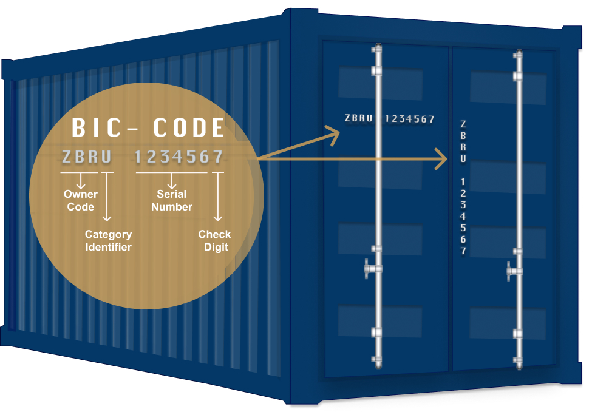 |
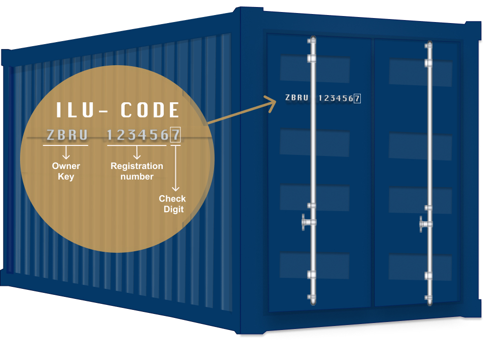 |
| 各標準コンテナ タイプの輸送コンテナ ID |
輸送コンテナ ID のキャプチャ方法を説明するビデオ
構成
輸送コンテナ ID パラメータは次のとおりです。
- 入力ソース - データをキャプチャする次の入力ソースを指定します。カメラ専用。
- セッション タイムアウト - タイムアウト期間を指定します。整数範囲: 0 ～ 60000 (500 刻み)、デフォルト: 10000.
- 照明 - スキャン セッション中に照明のオン/オフを切り替えます。
- ズーム– カメラのズーム値を最小から最大まで指定します。1 ～ 8 (デフォルト)1.
- 出力イメージ - 出力イメージ モードを指定します。
- 完全
- なし
- 向き - 次の方向タイプを選択します。
- 水平方向
- 垂直方向
- フィードバック パラメータ:
- 音声フィードバックのデコード - デコードに成功したことを示すために再生する音をリストから選択します
- タッチ フィードバックのデコード - デコードに成功したときのデバイスのバイブレーションを有効/無効にします。Android 13 デバイスでは、デバイスの [Settings] (設定) の [Vibration & haptics] (バイブレーションと触覚) で [Touch Feedback] (タッチ フィードバック) を有効にしないと、[Decode Haptic Feedback] (タッチ フィードバックのデコード) が機能しません。
- デコード時の LED 通知 - 有効にすると、緑色の LED が点滅し、デコードに成功したことを示します
- ビープ音量チャンネル - [デコード完了の音声フィードバック] の再生時に使用する音量設定を選択します。
- ベル音 - 音声フィードバックに [ベル音] 音量設定を使用します
- 音楽 & メディア - 音声フィードバックに音楽とメディアの音量設定を使用します
- アラーム - 音声フィードバックにアラームの音量設定を使用します
- 通知 - 音声フィードバックに通知の音量設定を使用します (デフォルト)
輸送コンテナ ID パラメータを設定します。
- DataWedge プロファイルで、[OCR Wedge] の [ワークフロー入力] と [輸送コンテナ ID] を有効にします。注: 輸送コンテナ ID OCR Wedge ライセンスが必要です。
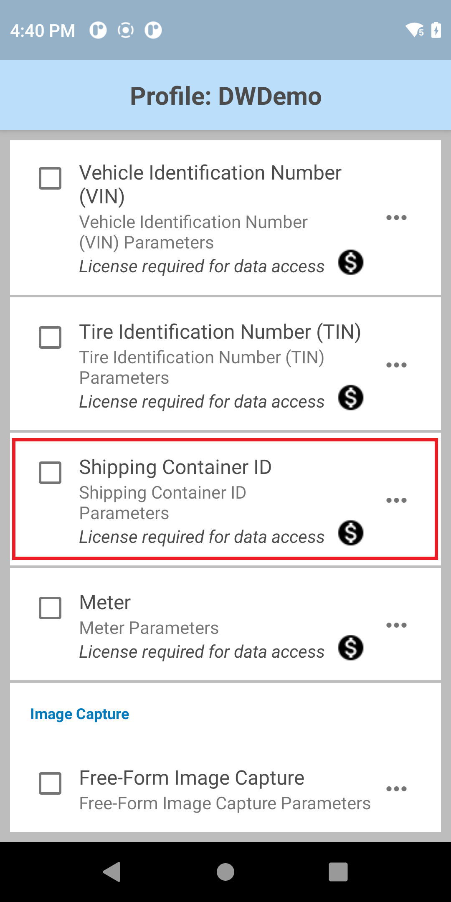
- [輸送コンテナ ID] の横にあるメニューをタップして、パラメータを開きます。
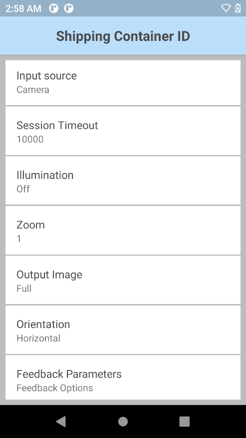
- 必要に応じて、輸送コンテナ ID パラメータを選択して設定します。
- [フィードバック パラメータ] をタップします。
- 希望のフィードバック パラメータを設定します。
- オプションで、DWDemo を使用してこの機能を試すことができます。
メーター
OCR Wedge は、ほとんどのアナログ、ダイヤル、およびデジタル検針の自動認識をサポートします。
ガス、電気、水道メーターなどの公共設備メーターを読み取り、同時に半角数字、小数点、変更値 (デジタルメーターの場合) を自動的に検出します。
フィールド サービス検針
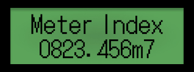 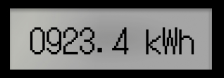 |
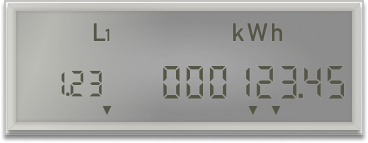 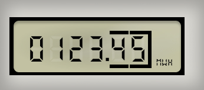 |
アナログ、ドット マトリックス (デジタル)、および電気 (デジタル) メーターのサンプル
検針のデモ ビデオ
サポートされているメーター タイプ:
- アナログ – 通常は電気、ガス、または水道メーター
- 最適なパフォーマンスには、10 進で最大 3 桁 (数値の前は 4 ～ 10桁)。
- 黒と白の背景をサポートします。
- デジタル – 通常は熱量計:
- LCD および LED ディスプレイから読み取り
- 通常、3 桁以上の 7 セグメント ディスプレイ
- ドット マトリックス表示 – 別の文字として表示されるコンマに対応する自動コンマ検出
- 10 進で最大 3 桁 (数値の前は 4 ～ 6桁) の熱量計
- ダイヤル – 通常は電気メーター
- 4 ～ 5 個の主ダイヤルと最大 1 個 (赤) の 10 進数ダイヤル (数字のラベル) をサポート
- 数値のみが返されます
- 白い背景の、黒または赤のダイヤルを読み取ります。
- ダイヤルはまっすぐ並んでいる必要はなく、ダイヤルが少しずれていても対応できます。
- 円形に配置されたダイヤルはサポートされていません。
パフォーマンスは、反射、照明条件、異物 (汚れなど)、傷などの要因に影響される可能性があります。
構成
検針パラメータ:
- 入力ソース - データをキャプチャする入力ソースを指定します。OCR サポートのためデフォルトではカメラに設定されます。
- セッション タイムアウト - タイムアウト期間を指定します。整数範囲: 0 ～ 60000 (500 刻み)、デフォルト: 10000.
- 照明 - スキャン中に照明のオン/オフを切り替えます。
- 出力イメージ - データのデコード元となるイメージを出力します。
- フル - イメージ全体を出力 (デフォルト)
- なし - イメージを出力しません
- メーター タイプ - 検針のスキャン モード:
- アナログ、デジタル、またはデジタル ドット マトリックス メーター
- ダイヤル メーター
- フィードバック パラメータ:
- 音声フィードバックのデコード - デコードに成功したことを示すために再生する音をリストから選択します
- タッチ フィードバックのデコード - デコードに成功したときのデバイスのバイブレーションを有効/無効にします。Android 13 デバイスでは、デバイスの [Settings] (設定) の [Vibration & haptics] (バイブレーションと触覚) で [Touch Feedback] (タッチ フィードバック) を有効にしないと、[Decode Haptic Feedback] (タッチ フィードバックのデコード) が機能しません。
- デコード時の LED 通知 - 有効にすると、緑色の LED が点滅し、デコードに成功したことを示します
- ビープ音量チャンネル - [デコード完了の音声フィードバック] の再生時に使用する音量設定を選択します。
- ベル音 - 音声フィードバックに [ベル音] 音量設定を使用します
- 音楽 & メディア - 音声フィードバックに音楽とメディアの音量設定を使用します
- アラーム - 音声フィードバックにアラームの音量設定を使用します
- 通知 - 音声フィードバックに通知の音量設定を使用します (デフォルト)
メーター パラメータを設定するには:
- DataWedge プロファイルで、[OCR Wedge] の [ワークフロー入力] と [メーター] を有効にします。注: 検針 OCR Wedge ライセンスが必要です。
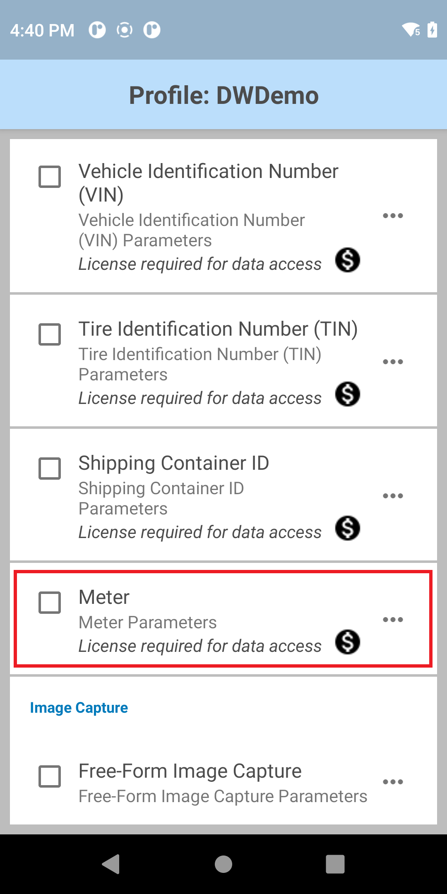
- [メーター] の横にあるメニュー アイコンをタップして、[メーター] パラメータを開きます。
- 必要に応じて、メーター パラメータを選択して設定します。
- [フィードバック パラメータ] をタップします。
- 希望のフィードバック パラメータを設定します。
- オプションで、DWDemo を使用してこの機能を試すことができます。
イメージ キャプチャ
画像キャプチャには 3 種類があります。
それぞれの情報は、以下のセクションで説明します。
フリーフォーム イメージ キャプチャ
フリーフォーム イメージ キャプチャは、任意の形式 (ドキュメントやラベルに限定されない) のイメージを、内部イメージャやカメラのいずれでもキャプチャできる機能であり、存在するバーコードをハイライトおよび/またはデコードするオプションもあります。デバイスに内蔵カメラがない場合は、内部イメージャで画像をキャプチャする機能が便利です。カメラから画像をキャプチャする場合、画像解像度は 1920 x 1080 です。
仕組み:
- デバイスで最初にトリガを押す (ソフト ボタンまたはハード トリガ) とセッションが開始され、プレビュー フレームが表示されます。バーコードが読み取られると強調表示され、ユーザーに検出されたことが通知されます。
- 次のトリガを押すと、画像がキャプチャされてプレビューに表示されます。
- [バーコードを読み取り、強調表示] オプションが有効になっている場合、画像が返され、強調表示されているバーコードが読み取られます。
デフォルトのシンボル体系の状態は以下の通りです。
| シンボル体系 | 有効 | 無効 |
|---|---|---|
| Australian Postal | x | |
| AZTEC | x | |
| Canadian Postal | x | |
| Chinese 2 of 5 | x | |
| Codabar | x | |
| Code 11 | x | |
| Code 128 | x | |
| Code 39 | x | |
| Code 93 | x | |
| Composite AB | x | |
| Composite C | x | |
| Discrete 2 of 5 | x | |
| Data Matrix | x | |
| DotCode | x | |
| Dutch Postal | x | |
| EAN 128 | x | |
| EAN 13 | x |
| シンボル体系 | 有効 | 無効 |
|---|---|---|
| EAN 8 | x | |
| Finnish Postal 4S | x | |
| Grid Matrix | x | |
| GS1 Databar | x | |
| GS1 Databar Expanded | x | |
| GS1 Databar Limited | x | |
| GS1 Datamatrix | x | |
| GS1 QRCode | x | |
| Han Xin | x | |
| Interleaved 2OF5 | x | |
| ISBT 128 | x | |
| Japanese Postal | x | |
| Korean 3OF5 | x | |
| Mailmark | x | |
| Matrix 2OF5 | x | |
| Maxicode | x |
| シンボル体系 | 有効 | 無効 |
|---|---|---|
| Micro QR | x | |
| MicroPDF | x | |
| MSI | x | |
| PDF 417 | x | |
| QR Code | x | |
| 署名 | x | |
| TLC 39 | x | |
| Trioptic 39 | x | |
| UK Postal | x | |
| UPCA | x | |
| UPCE0 | x | |
| UPCE1 | x | |
| US Planet | x | |
| US Postnet | x | |
| US4State | x | |
| US4state FICS | x |
構成
フリーフォーム イメージ キャプチャ パラメータ:
- 入力ソース - データをキャプチャする次の入力ソースを指定します。イメージャまたはカメラ。
- セッション タイムアウト - タイムアウト期間を指定します。整数範囲: 0 ～ 60000 (500 刻み)、デフォルト: 10000.
- 照明 - スキャン中に照明のオン/オフを切り替えます。
- バーコードの読み取りと強調表示:
- オフ - 読み取りとハイライトがオフになっています
- 強調表示 - バーコードのみを強調表示します
- 読み取りとハイライト - バーコードを読み取り、強調表示します
注: 2 つのデコーダ タイプはバーコードの強調表示に対応していません。
• 郵便番号 (Australian Postal、Canadian Postal、Dutch Postal、Finnish Postal 4S、Japanese Postal、Mailmark、UK Postal、US Planet、US Postnet、US4state、US4state FICS)
• Composite コード (Composite AB、Composite C、TLC 39)
- フィードバック パラメータ:
- 音声フィードバックのデコード - デコードに成功したことを示すために再生する音をリストから選択します
- タッチ フィードバックのデコード - デコードに成功したときのデバイスのバイブレーションを有効/無効にします。Android 13 デバイスでは、デバイスの [Settings] (設定) の [Vibration & haptics] (バイブレーションと触覚) で [Touch Feedback] (タッチ フィードバック) を有効にしないと、[Decode Haptic Feedback] (タッチ フィードバックのデコード) が機能しません。
- デコード時の LED 通知 - 有効にすると、緑色の LED が点滅し、デコードに成功したことを示します
- ビープ音量チャンネル - [デコード完了の音声フィードバック] の再生時に使用する音量設定を選択します。
- ベル音 - 音声フィードバックに [ベル音] 音量設定を使用します
- 音楽 & メディア - 音声フィードバックに音楽とメディアの音量設定を使用します
- アラーム - 音声フィードバックにアラームの音量設定を使用します
- 通知 - 音声フィードバックに通知の音量設定を使用します (デフォルト)
フリーフォーム イメージ キャプチャを使用してイメージをキャプチャするオプションを設定します。
DataWedge プロファイルで、[イメージ キャプチャ] の下の [ワークフロー入力] および [フリーフォーム イメージ キャプチャ] を有効にします。
[フリーフォーム イメージ キャプチャ] の横にあるメニュー アイコンをタップして、パラメータを開きます。
必要に応じて、[フリーフォーム イメージ キャプチャ] パラメータを選択して設定します。
[フィードバック パラメータ] をタップします。
希望のフィードバック パラメータを設定します。
オプションで、DWDemo を使用してこの機能を試すことができます。
注: 複数のバーコードからスキャンされたデータを出力するためにキーストローク出力を使用する場合、各バーコードの間にセパレータはありません。
イメージャ フレーム ストリーミング
イメージャ フレーム ストリーミングにより、アプリケーションは、デバイス イメージャから連続した画像フレームを直接キャプチャできるため、統一されたワークフロー内で処理、表示、バーコード キャプチャを同時に行うことが可能になります。フレーム データは、コンテンツ URI を使用したインテント出力を介してアプリケーションに配信されるため、アプリケーションはフレーム全体を再構築し、低レイテンシで処理することができます。
ストリーミングの動作は、設定されたイメージ キャプチャ モードによって決まります。
- イメージ キャプチャのみ: デコード アルゴリズムを実行せずに、連続した未処理の画像フレームをアプリケーションに直接ストリーミングします。
- イメージ キャプチャとデコード: 画像フレームをストリーミングしながら、バーコードをリアルタイムで識別およびデコードします。アプリケーションは、未処理の画像データとデコードされたバーコードの両方を受信します。デコード成功時の音声、触覚、LED フィードバックを設定できます。
仕組み:
- セッションの開始: トリガ イベント (ソフトウェア ボタンまたはハードウェア トリガ) が連続ストリーミング セッションを開始します。プレビュー機能が有効になっている場合は、ユーザーにライブ ビューファインダが表示されます。
- データ配信: フレームデータは、選択したイメージ キャプチャ モード (イメージ キャプチャのみまたはイメージ キャプチャとデコード) に基づいて、アプリケーションに連続的にストリーミングされます。
- リアルタイムフィードバック: イメージ キャプチャとデコードのセッション中、デコードに成功すると、ビデオ ストリームを中断することなく、設定可能なフィードバック (音声、触覚、LED インジケータ) が即座に作動します。
- ターゲティング支援: ハードウェアの照準器と照明の設定は、ストリーミング中のフレーム品質と照準精度を向上させるように構成できます。
- セッションの終了: ストリーミング セッションは、ユーザーがトリガを解除するか、定義されたセッション タイムアウト制限に達するか、アプリケーションが明示的に終了コマンドを発行するまで、アクティブのままです。
パフォーマンスに関する推奨事項: コンテンツ プロバイダを使用したインテント出力でフレームを受信する場合、アプリケーションが現在のフレームを完全に処理した後にのみ、次のフレームを要求することをお勧めします。これにより、データの滞留が防止され、安定した動作が確保されます。
デフォルトのシンボル体系の状態は以下の通りです。
| シンボル体系 | 有効 | 無効 |
|---|---|---|
| Australian Postal | x | |
| AZTEC | x | |
| Canadian Postal | x | |
| Chinese 2 of 5 | x | |
| Codabar | x | |
| Code 11 | x | |
| Code 128 | x | |
| Code 39 | x | |
| Code 93 | x | |
| Composite AB | x | |
| Composite C | x | |
| Discrete 2 of 5 | x | |
| Data Matrix | x | |
| DotCode | x | |
| Dutch Postal | x | |
| EAN 128 | x | |
| EAN 13 | x |
| シンボル体系 | 有効 | 無効 |
|---|---|---|
| EAN 8 | x | |
| Finnish Postal 4S | x | |
| Grid Matrix | x | |
| GS1 Databar | x | |
| GS1 Databar Expanded | x | |
| GS1 Databar Limited | x | |
| GS1 Datamatrix | x | |
| GS1 QRCode | x | |
| Han Xin | x | |
| Interleaved 2OF5 | x | |
| ISBT 128 | x | |
| Japanese Postal | x | |
| Korean 3OF5 | x | |
| Mailmark | x | |
| Matrix 2OF5 | x | |
| Maxicode | x |
| シンボル体系 | 有効 | 無効 |
|---|---|---|
| Micro QR | x | |
| MicroPDF | x | |
| MSI | x | |
| PDF 417 | x | |
| QR Code | x | |
| 署名 | x | |
| TLC 39 | x | |
| Trioptic 39 | x | |
| UK Postal | x | |
| UPCA | x | |
| UPCE0 | x | |
| UPCE1 | x | |
| US Planet | x | |
| US Postnet | x | |
| US4State | x | |
| US4state FICS | x |
構成
イメージャ フレーム ストリーミング パラメータ:
- 入力ソース - データをキャプチャする次の入力ソースを指定します。イメージャ (注: カメラはこのワークフローではサポートされていません)。
- セッション タイムアウト - タイムアウト期間を指定します。整数範囲: 0 ～ 60000 (500 刻み)、デフォルト: 10000.
- 照明 - スキャン中に照明のオン/オフを切り替えます。
- エイム モード - 照準器を有効または無効にします。
- プレビュー - プレビューを有効 (デフォルト) または無効にします。
- イメージ キャプチャ モード:
- イメージ キャプチャのみ - このデバイスは、未処理の画像フレームのみをストリーミングします。
- イメージ キャプチャとデコード - デバイスは、フレームをストリーミングすると同時に、フレーム内で検出されたバーコードをデコードします。
- フィードバック パラメータ:
- 音声フィードバックのデコード - デコードに成功したことを示すために再生する音をリストから選択します
- タッチ フィードバックのデコード - デコードに成功したときのデバイスのバイブレーションを有効/無効にします。Android 13 デバイスでは、デバイスの [Settings] (設定) の [Vibration & haptics] (バイブレーションと触覚) で [Touch Feedback] (タッチ フィードバック) を有効にしないと、[Decode Haptic Feedback] (タッチ フィードバックのデコード) が機能しません。
- デコード時の LED 通知 - 有効にすると、緑色の LED が点滅し、デコードに成功したことを示します
- ビープ音量チャンネル - [デコード完了の音声フィードバック] の再生時に使用する音量設定を選択します。
- ベル音 - 音声フィードバックに [ベル音] 音量設定を使用します
- 音楽 & メディア - 音声フィードバックに音楽とメディアの音量設定を使用します
- アラーム - 音声フィードバックにアラームの音量設定を使用します
- 通知 - 音声フィードバックに通知の音量設定を使用します (デフォルト)
イメージャ フレーム ストリーミング パラメータを使用して画像をキャプチャするためのオプションを設定します。
- DataWedge プロファイルで、[イメージ キャプチャ] の下の [ワークフロー入力] および [イメージャ フレーム ストリーミング] を有効にします。
- [イメージャ フレーム ストリーミング] の横にあるメニュー アイコンをタップして、そのパラメータを開きます。必要に応じて、パラメータを選択して設定します。
- [イメージ キャプチャ モード] をタップして、[イメージ キャプチャのみ]、または[イメージ キャプチャとデコード] のいずれかを選択します。
ドキュメント キャプチャ
ドキュメント キャプチャを使用すると、カメラまたは内部イメージャでドキュメントをイメージとしてキャプチャできます。視覚的なサポートとして、ドキュメント全体またはその境界 (枠線) をプレビューで強調表示することができます。別のオプションでは、バーコードの有無を検出し、存在する場合はバーコードがデコードされます。ハード トリガを押すとドキュメントがキャプチャされます。
ドキュメント キャプチャのビデオ デモ
構成
ドキュメント キャプチャ パラメータ:
- 入力ソース - データをキャプチャする次の入力ソースを指定します。イメージャまたはカメラ。
- セッション タイムアウト - タイムアウト期間を指定します。整数範囲: 0 ～ 60000 (500 刻み)、デフォルト: 15000.
- 照明 - スキャン セッション中に照明のオン/オフを切り替えます。
- バーコードの有無 - バーコードが必要かどうかを指定します。バーコードが存在する場合は、読み取られます。
- 必須
- オプション
- ドキュメント強調表示モード - 次のいずれかのドキュメントの強調表示モードを指定します。
- 枠線のみ
- 塗りつぶし
- ドキュメントの強調表示色 - カラー ピッカーからドキュメントを強調表示する色を選択します。
- フィードバック パラメータ:
- 音声フィードバックのデコード - デコードに成功したことを示すために再生する音をリストから選択します
- タッチ フィードバックのデコード - デコードに成功したときのデバイスのバイブレーションを有効/無効にします。Android 13 デバイスでは、デバイスの [Settings] (設定) の [Vibration & haptics] (バイブレーションと触覚) で [Touch Feedback] (タッチ フィードバック) を有効にしないと、[Decode Haptic Feedback] (タッチ フィードバックのデコード) が機能しません。
- デコード時の LED 通知 - 有効にすると、緑色の LED が点滅し、デコードに成功したことを示します
- ビープ音量チャンネル - [デコード完了の音声フィードバック] の再生時に使用する音量設定を選択します。
- ベル音 - 音声フィードバックに [ベル音] 音量設定を使用します
- 音楽 & メディア - 音声フィードバックに音楽とメディアの音量設定を使用します
- アラーム - 音声フィードバックにアラームの音量設定を使用します
- 通知 - 音声フィードバックに通知の音量設定を使用します (デフォルト)
ドキュメント キャプチャを使用してドキュメントをキャプチャするためのオプションを構成します。
- DataWedge プロファイルで、[イメージ キャプチャ] の下の [ワークフロー入力] および [フリーフォーム イメージ キャプチャ] を有効にします。
- [ドキュメント キャプチャ] の横にあるメニュー アイコンをタップして、パラメータを開きます。
- 必要に応じて、[ドキュメント キャプチャ] パラメータを選択して設定します。
- [フィードバック パラメータ] をタップします。
- 希望のフィードバック パラメータを設定します。
- オプションで、DWDemo を使用してこの機能を試すことができます。
関連ガイド: